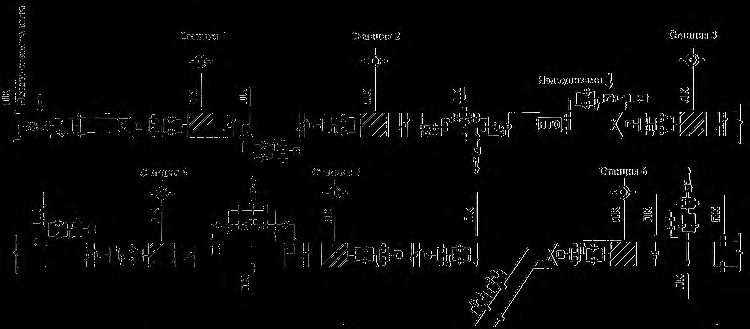
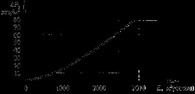
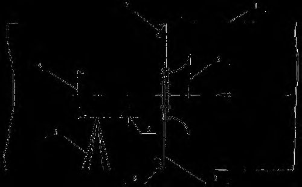
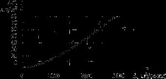

СП 263.1325800.2016 «Приспособление метрополитенов под защитные сооружения гражд»
О документе: разработчики, утверждение, регистрация, ключевые слова
СВОД ПРАВИЛ СП 263.1325800.2016
Москва 2016
- 1 ИСПОЛНИТЕЛИ -ФГБУ ВНИИ ГОЧС (ФЦ), ФГБУ ВНИИПО МЧС РФ, ОАО «Метрогипротранс», 26 ЦНИИ филиал ОАО «31 ГПИСС», АО «Мосинжпроект»
- 2 ВНЕСЕН Техническим комитетом по стандартизации ТК 465 «Строительство»
- 3 ПОДГОТОВЛЕН к утверждению Департаментом градостроительной деятельности и архитектуры Министерства строительства и жилищно-коммунального хозяйства Российской Федерации (Минстрой России)
- 4 УТВЕРЖДЕН приказом Министерства строительства и жилищно-коммунального хозяйства Российской Федерации от 16 декабря 2016 г. № 966/пр и введен в действие с 17 июня 2017 г.
- 5 ЗАРЕГИСТРИРОВАН Федеральным агентством по техническому регулированию и метрологии (Росстандарт)
- 6 ВВЕДЕН ВПЕРВЫЕ
- В случае пересмотра ( замены ) или отмены настоящего свода правил соответствующее уведомление будет опубликовано в установленном порядке. Соответствующая информация , уведомление и тексты размещаются также в информационной системе общего пользования - на официальном сайте разработчика ( Минстрой России ) в сети Интернет
© Минстрой России, 2016
Настоящий нормативный документ не может быть полностью или частично воспроизведен, тиражирован и распространен в качестве официального издания на территории Российской Федерации без разрешения Минстроя России
и
Дата введения - 2017-06-17
УДК 699.85:006.354
Ключевые слова: защитное сооружение, гражданская оборона, укрытие, противорадиационное укрытие, защитное устройство, динамическая нагрузка, метрополитен
ИСПОЛНИТЕЛЬ
ЗАО «ПРОМТРАНСНИИПРОЕКТ»
| Руководитель разработки Директор | В.А. Сидяков |
|---|---|
| СОИСПОЛНИТЕЛЬ | |
| Руководитель организации разработчика Заместитель начальника ФГБУ ВНИИ ГОЧС (ФЦ) | И.В. Сосунов |
| Руководитель разработки Начальник 2 научно-исследовательского центра ФГБУ ВНИИ ГОЧС (ФЦ) | Н.Н. Посохов |
| Исполнитель: Главный научный сотрудник 2 научно-исследовательского центра ФГБУ ВНИИ ГОЧС (ФЦ) | Г.П. Тонких |
Введение
Настоящий свод правил составлен с целью повышения уровня безопасности людей в защитных сооружениях и сохранности материальных ценностей в соответствии с Федеральным законом от 12 февраля 1998 г. № 28-ФЗ «О гражданской обороне» 2 , Федеральным законом от 30 декабря 2009 г. № 384-ФЗ «Технический регламент о безопасности зданий и сооружений» 3 и Постановления Правительства Российской Федерации от 29 ноября 1999 г. № 1309 «О порядке создания убежищ и иных объектов гражданской обороны» [4], повышения уровня гармонизации нормативных требований с европейскими и международными нормативными документами, применения единых методов определения эксплуатационных характеристик и методов оценки.
Свод правил «Приспособление метрополитенов под защитные сооружения гражданской обороны. Общие правила проектирования» разработан ФГБУ ВНИИ ГОЧС (ФЦ) (руководитель работы - д-р техн. наук, проф. Г.П. Тонких , канд. техн. наук И.В. Сосунов , Н.Н. Посохов ), 26 ЦНИИ филиал ОАО «31 ГПИСС» (д-р техн. наук С.Н. Латушкин ), ФГБУ ВНИИПО МЧС России (д-р техн. наук А.П. Чибисов , канд. техн. наук Е.А. Соина ; ОАО «Метрогипротранс» ( П.Д. Павлов ); АО «Мосинжпроект» ( Р.Б. Некрасов ).
1Область применения
2Нормативные ссылки
- В настоящем своде правил использованы нормативные ссылки на следующие документы:
ГОСТ 30244-94 Материалы строительные. Методы испытаний на горючесть
- ГОСТ 31565-2012 Кабельные изделия. Требования пожарной безопасности
- ГОСТ Р 53316-2009 Кабельные линии. Сохранение работоспособности в условиях пожара. Метод испытаний
- ГОСТ Р 54812-2011 Дизель-генераторы судовые вспомогательные и аварийные. Типы и основные параметры. Общие технические требования
- СП 1.13130.2009 Системы противопожарной защиты. Эвакуационные пути и выходы (с изменением № 1)
- СП 3.13130.2009 Системы противопожарной защиты. Система оповещения и управления эвакуацией людей при пожаре. Требования пожарной безопасности
- СП 5.13130.2009 Системы противопожарной защиты. Установки пожарной сигнализации и пожаротушения автоматические Нормы и правила проектирования (с изменением № 1)
- СП 12.13130.2009 Определение категорий помещений, зданий и наружных установок по взрывопожарной и пожарной опасности
- СП 52.13330.2011 «СНиП 23-05-95* Естественное и искусственное освещение»
- СП 88.13330.2014 «СНиП II-11-77* Защитные сооружения гражданской обороны»
- СП 112.13330.2011 «СНиП 21-01-97* Пожарная безопасность зданий и сооружений»
- СП 120.13330.2012 «СНиП 32-02-2003 Метрополитены» (с изменением № 1)
- СП 165.1325800.2014 «СНиП 2.01.51-90 Инженерно-технические мероприятия по гражданской обороне»
СанПиН 2.1.4.1074-01 Питьевая вода. Гигиенические требования к качеству воды централизованных систем питьевого водоснабжения. Контроль качества
\_\_\_\_\_\_\_\_\_\_\_\_\_\_\_\_\_\_\_\_\_\_\_\_\_\_\_\_\_\_\_\_\_\_\_\_\_\_\_\_\_\_\_\_\_\_\_\_\_\_\_\_\_\_\_\_\_\_\_\_\_\_\_\_\_\_\_\_\_\_\_\_\_\_\_\_\_\_\_\_\_\_\_\_\_\_\_\_\_\_\_\_\_\_
Общие правила проектирования
Adaptation of subways under the protective constructions of civil defense. General rules of design
Примечание -При пользовании настоящим сводом правил целесообразно проверить действие ссылочных документов в информационной системе общего пользования - на официальном сайте федерального органа исполнительной власти в сфере стандартизации в сети Интернет или по ежегодному информационному указателю «Национальные стандарты», который опубликован по состоянию на 1 января текущего года, и по выпускам ежемесячного информационного указателя «Национальные стандарты» за текущий год. Если заменен ссылочный документ, на который дана недатированная ссылка, то рекомендуется использовать действующую версию этого документа с учетом всех внесенных в данную версию изменений. Если заменен ссылочный документ, на который дана датированная ссылка, то рекомендуется использовать версию этого документа с указанным выше годом утверждения (принятия). Если после утверждения настоящего свода правил в ссылочный документ, на который дана датированная ссылка, внесено изменение, затрагивающее положение, на которое дана ссылка, то это положение рекомендуется применять без учета данного изменения. Если ссылочный документ отменен без замены, то положение, в котором дана ссылка на него, рекомендуется применять в части, не затрагивающей эту ссылку. Сведения о действии сводов правил целесообразно проверить в Федеральном информационном фонде технических регламентов и стандартов.
3Термины, определения и сокращения
- 3.1.1 воздействия
- Нагрузка, изменения температурно-влажностного режима, влияния на защитное сооружение окружающей среды, осадка оснований, изменение свойств материалов во времени и другие факторы, вызывающие изменение напряженно-деформированного состояния строительных конструкций, которые при проведении расчетов допускается задавать в виде эквивалентно-статических нагрузок.
- 3.1.2 герметичность сооружения
- Защитное свойство сооружения, характеризуемое степенью воздухонепроницаемости ограждающих строительных конструкций по границам герметизации, в том числе стыков сборных элементов, входных устройств, мест пропуска коммуникаций, газовоздушных трактов.
- 3.1.3гражданская оборона
- Система мероприятии по подготовке к защите и по защите населения, материальных и культурных ценностей на территории Российской Федерации от опасностей, возникающих при военных конфликтах или вследствие этих конфликтов, а также при чрезвычайных ситуациях природного и техногенного характера.Источник: Федеральный закон от 12 февраля 1998 г. № 28-ФЗ, статья 1
- 3.1.4 дополнительные сооружения и устройства
- Сооружения и устройства, рассчитанные на восприятие заданных воздействий средств поражения (поражающих факторов) и предназначенные для защиты и жизнеобеспечения населения, укрываемого в метрополитене в течение расчетного периода времени, включающие дизельные электростанции, фильтровентиляционные установки, установки водоснабжения, водоотвода и канализации, защитно-герметические затворы, устройства связи и управления.
- глубокое
- Заложение, при котором станции и перегонные тоннели сооружаются через вертикальные стволы и наклонные эскалаторные тоннели без вскрытия дневной поверхности;
- мелкое
- Заложение, при котором объекты метрополитена сооружаются открытым способом (с том числе из-под перекрытия), со вскрытием дневной поверхности, перегонные тоннели - открытым или закрытым способом.
- 3.1.6 защитное сооружение гражданской обороны; ЗСГО
- Специальное сооружение, предназначенное для защиты населения, личного состава сил гражданской обороны, а также техники и имущества гражданской обороны от воздействия средств нападения противника.Источник: ГОСТ Р 42.0.02-2001, пункт 29
- 3.1.7 защита населения в чрезвычайных ситуациях
- Совокупность взаимоувязанных по времени, ресурсам и месту проведения мероприятий РСЧС, направленных на предотвращение или максимальное снижение угрозы жизни, здоровью и потерь населения от поражающих факторов и воздействий источников чрезвычайных ситуаций.Источник: ГОСТ Р 22.0.02-94, пункт 2.3.7
- 3.1.8 зона чрезвычайной ситуации
- Территория, на которой сложилась чрезвычайная ситуация. 3.1.9 инженерно-технические мероприятия гражданской обороны и предупреждения чрезвычайных ситуаций; ИТМ ГОЧС: Совокупность реализуемых при строительстве проектных решений, направленных на обеспечение защиты населения и территорий и снижение материального ущерба от ЧС техногенного и природного характеров, от опасностей, возникающих при ведении военных конфликтов или вследствие этих конфликтов, а также при диверсиях и террористических актах.
- 3.1.10 обычное средство поражения
- Вид оружия, не относящийся к оружию массового поражения, оснащенный боеприпасами, снаряженными взрывчатыми или горючими веществами.
- 3.1.11 противорадиационное укрытие; ПРУ
- Защитное сооружение гражданской обороны, предназначенное для защиты укрываемых от воздействия ионизирующих излучений при радиоактивном заражении (загрязнении) местности и допускающее непрерывное пребывание в нем укрываемых в течение нормативного времени.
- 3.1.12 санитарный пропускник (санпропускник)
- Помещение, предназначенное для смены одежды, санитарной обработки персонала и контроля радиоактивного загрязнения кожных покровов и спецодежды.
- 3.1.13 сооружение двойного назначения
- Инженерное сооружение производственного, общественного, коммунально-бытового или транспортного назначения, приспособленное (запроектированное) для укрывания людей, техники и имущества от опасностей, возникающих при ведении военных конфликтов или вследствие этих конфликтов, диверсиях, в результате аварий на потенциально опасных объектах или стихийных бедствий.
- 3.1.14 строительная конструкция
- Часть защитного сооружения, выполняющая определенные несущие или ограждающие функции.
- 3.1.15 убежище гражданской обороны (убежище ГО)
- Защитное сооружение гражданской обороны, предназначенное для защиты укрываемых в течение нормативного времени от расчетного воздействия поражающих факторов ядерного и химического оружия и обычных средств поражения, бактериальных (биологических) средств и поражающих концентраций аварийно химически опасных веществ, возникающих при аварии на потенциально опасных объектах, а также от высоких температур и продуктов горения при пожарах.
- 3.1.16 укрытие гражданской обороны (укрытие ГО)
- Защитное сооружение гражданской обороны, предназначенное для защиты укрываемых от фугасного и осколочного действия обычных средств поражения, поражения обломками строительных конструкций, а также от обрушения конструкций вышерасположенных этажей зданий различной этажности.
- 3.1.17 участок с автономным жизнеобеспечением
- Приспособленный под убежище участок линии метрополитена, обеспеченный дополнительными сооружениями и устройствами.
- 3.1.18 фугасное действие
- Действие боеприпасов, при котором цель поражается продуктами взрыва разрывного заряда и образующейся ударной волной.
- 3.1.19 чрезвычайная ситуация
- Обстановка на определенной территории, сложившаяся в результате аварии, опасного природного явления, катастрофы, стихийного или иного бедствия, которые могут повлечь или повлекли за собой человеческие жертвы, ущерб здоровью людей или окружающей среде, значительные материальные потери и нарушение условий жизнедеятельности людей.
- 3.1.20 шлюз
- Часть подземного защитного сооружения, ограниченная по концам защитно-герметическими затворами с блокировкой, не допускающей их одновременного открытия.
- 3.1.21 эвакуация населения, материальных и культурных ценностей
- Комплекс мероприятий по организованному вывозу (выводу) населения, материальных и культурных ценностей из зон возможных опасностей и их размещение в безопасных районах.
- 3.1.22 эвакуационный выход
- Выход наружу без разгерметизации сооружения или в соседний пожарный отсек.
- 3.1.23 эксплуатационный персонал (персонал)
- Специально подготовленные лица, прошедшие проверку знаний в объеме, обязательном для данной работы или должности. 3.2 В настоящем своде правил применены следующие сокращения: АВР - автоматическое включение резерва; АУПТ - автоматическая установка пожаротушения; АХОВ - аварийно химически опасные вещества; ВОУ - водоотливная установка; ГЖ - горючие жидкости; ГО - гражданская оборона; ГСМ - горюче-смазочные материалы; ДГ - дизель-генератор; ДПС - диспетчерский пункт станции; ДПЛ - диспетчерский пункт линии (метрополитена); ДСУ - дополнительные сооружения и устройства; ДЭС - дизельная электростанция; ЗКП ГО и ЧС - защищенный командный пункт органа управления по делам ГО и ЧС; КП - командный пункт; КПВВ - командный пункт воздуховыпуска; КПД - » » ДЭС; КПЛ - » » линии; КПМ - » » метрополитена; КПОПБ - » » охраны порядка и безопасности; КПОПБС - » » охраны порядка и безопасности станции; КПОПБУ - » » охраны порядка и безопасности участка; КПС - » » станции; КПУ - » » участка; КПФ - » » ФВУ; КПШ - » » шлюза; OB - отравляющие вещества; ОРГ - оперативно-разведывательная группа; ПЗ - пост у затвора; ПИ - полная изоляция; ПП - понизительная подстанция; ПШЗ - пост у шлюзового затвора; РУ - распределительное устройство; СВВ - сейсмовзрывная волна; СПЗ - система пожарной защиты; ТПП - тяговопонизительная подстанция; УАЖ - участок с автономным жизнеобеспечением; УТВ - установка тоннельной вентиляции; ФВ - фильтровентиляция; ФВУ - фильтровентиляционная установка; ЦУС - центральная усилительная станция; ЧВ - чистая вентиляция; ЧС - чрезвычайная ситуация; ЭМИ - электромагнитный импульс.
4Общие положения
4.1Приспособление метрополитена под укрытия гражданской обороны
Для обеспечения укрываемых следует предусматривать водоснабжение, канализацию, электроснабжение и инвентарь для размещения людей (лежаки, складные стулья, раскладушки и т. д.) в соответствии с разделами 11, 12.
Наряд средств поражения определяют территориальные органы МЧС России. При отсутствии данных, для ориентировочной оценки, рекомендуется использовать наряд средств поражения, приведенный в СП 88.13330.
4.2Приспособление метрополитена под противорадиационные укрытия гражданской обороны
4.3Приспособление метрополитена под убежища гражданской обороны
Решение о приспособлении станций и линий метрополитена в качестве убежища ГО принимается органом исполнительной власти субъекта Российской Федерации в соответствии с требованиями СП 120.13330.
В военное время убежища должны обеспечивать защиту от расчетного воздействия средств поражения, высоких температур и продуктов горения при пожарах, бактериальных (биологических) средств, отравляющих веществ, а также при необходимости от аварийно химически опасных веществ, в соответствии с требованиями СП 165.1325800.
Чрезвычайные ситуации мирного времени природного и техногенного характеров определяются исполнительным органом субъекта Российской Федерации совместно с территориальными органами МЧС России по результатам анализа рисков их возникновения.
Дополнительные сооружения и устройства не должны приводить к ухудшению эксплуатационных качеств сооружений и устройств и нарушению условий работы метрополитена в транспортном режиме.
Участки необходимо отделять от наружной среды и от других участков защитногерметическими устройствами. Каждый участок, кроме того, разделяется линиями герметизации на два-три отсека длиной до 5 км с включением в отсек не более трех станций. Режим работы транспортных средств в рабочем режиме на этих участках определяет начальник метрополитена.
Расчетное время заполнения станций и тоннелей укрываемыми людьми по сигналам ГО следует принимать равным 10 мин. В отдельных случаях заданием на проектирование допускается увеличение указанного времени до 15 мин.
Эвакуационный выход должен располагаться за пределами зон возможных завалов.
- размеры (интервалы) движения поездов в военное время устанавливают в соответствии с объемами намечаемых перевозок;
- число обращающихся на линии поездов определяют исходя из условий их расстановки: по два поезда на каждой станции и по одному - на каждом станционном пути. Расстановка поездов в перегонных тоннелях не предусматривается;
СП 263.1325800.2016
- на платформах станций предусматриваются сходные устройства для спуска людей на путь;
- длина состава для условий военного времени определяется с учетом возможности использования сходных устройств;
- световая маскировка наземных объектов и входов в подземные объекты обеспечивается путем централизованного отключения осветительных приборов или механического закрытия светящихся объектов.
Структуру управления КПМ из городских пунктов управления в мирное и военное время устанавливают территориальные органы МЧС России.
Сооружения и устройства, используемые только в режиме ГО и ЧС, следует проектировать по СП 165.1325800 и по настоящему своду правил, а также по соответствующим положениям СП 120.13330.
Проектирование основных и дополнительных сооружений и устройств рекомендуется выполнять одновременно.
- основание для проектирования;
- расчетные сценарии возможных чрезвычайных ситуаций, перечень и параметры средств поражения;
- расчетные нагрузки на сооружения и устройства, а также режим функционирования;
- варианты использования линии по сигналам ГО (в качестве убежища; в транспортном режиме для эвакуации и рассредоточения населения и др.);
- перечень приспосабливаемых участков и состав ДСУ;
- перечень используемых входов в метрополитен для заполнения и эвакуации укрываемых людей;
- время пропуска людей в метрополитен до закрытия затворов, время эвакуации пассажиров из метрополитена в военное время и при возникновении опасности их поражения при ЧС в мирное время;
- характеристику возможной пожарной обстановки и вторичных поражающих факторов в зонах размещения установок тоннельной вентиляции и ФВУ;
- данные о предполагаемой численности укрываемых людей, тяготеющих к входам в метрополитен за расчетное время заполнения, включая численность детей до трех лет.
Задание на проектирование раздела «Дополнительные сооружения и устройства» согласовывается территориальными органами МЧС России.
При проектировании дополнительных сооружений совместно с линией метрополитена требования к ним допускается отражать в общем техническом задании.
5Расчет численности укрываемого населения
Не допускается размещение людей:
- на участках перегонных тоннелей линий мелкого заложения, расположенных под реками, каналами и водоемами, а также в неустойчивых водонасыщенных грунтах с уровнем грунтовых вод выше оси тоннеля;
- на участках перегонных тоннелей линий глубокого заложения, расположенных под реками, каналами и водоемами, если расстояние от тоннелей до слоя неустойчивых водонасыщенных грунтов менее двух диаметров тоннеля;
- на переходных участках с глубокого на мелкое заложение, расположенных в неустойчивых водонасыщенных грунтах.
- в тоннелях линий глубокого заложения и на платформах станций - 1,0;
- в тоннелях линий мелкого заложения - 1,5.
Численность людей в поездах, стоящих у платформ станций, следует принимать равной 50 чел. на каждый вагон.
Расчетную площадь пола в тоннеле следует определять на уровне головок рельсов.
6Объемно-планировочные решения
6.1Основные положения
- на станциях мелкого заложения - в уровне подземного вестибюля;
- на станциях глубокого заложения - в уровне платформы станции в отдельной выработке;
- в перегонных и других тоннелях - в уровне тоннелей.
Вместимость туалетов следует принимать по 11.3.
Туалеты на станциях следует предусматривать с учетом их использования персоналом в мирное время.
6.2Объемно-планировочные решения убежищ
В каждом УАЖ следует предусматривать, как правило, один эвакуационный выход на поверхность. В УАЖ с отсеками на участках линий глубокого и мелкого заложения допускается предусматривать эвакуационный выход только на участке глубокого заложения.
В составе эвакуационных выходов следует предусматривать санпропускники согласно раздела 16.
- В качестве шлюза следует использовать:
- а) на линиях мелкого заложения - подземный пешеходный переход, припортальный участок перегонного тоннеля, один из отсеков, участок перегона со станцией;
- б) на линиях глубокого заложения - подземный пешеходный переход, подземный вестибюль, защищенный наземный вестибюль, один из отсеков, участок перегона со станцией. Площадь шлюза следует определять из расчета 0,2 м² площади пола на одного человека.
Число циклов работы шлюза следует принимать не более четырех в течение 1 ч.
При технической возможности ДЭС и ФВУ рекомендуется размещать в междупутье, над тоннелями метрополитена или сбоку, а также в выработках рабочих шахт. При этом размеры выработок следует назначать с учетом размещения в них ДЭС и ФВУ, а их обделку предусматривать в постоянных конструкциях.
7Строительные конструкции
7.1Основные положения
К таким строительным конструкциям относятся:
- обделки сооружений;
- внутренние несущие (опорные) стены, ригели, колонны и фундаменты;
- междуэтажные перекрытия, если они являются дополнительными опорами наружных стен;
- внутренние конструкции (перегородки, междуэтажные перекрытия, не являющиеся опорами наружных стен, колонны встроенных частей сооружений, фундаменты под оборудование, устройства для крепления оборудования и коммуникаций и т. п.).
- обладать необходимой несущей способностью (прочностью), герметичностью, в том числе после воздействия расчетных средств поражения (приложение В), а также обеспечивать совместно с грунтовой толщей защиту от поражающих факторов;
- выдерживать сейсмовзрывное воздействие расчетных средств поражения;
- снижать действие ЭМИ расчетных средств поражения;
- обеспечивать требуемую степень ослабления проникающей радиации;
- удовлетворять требованиям пожарной безопасности;
- обладать устойчивостью против коррозии;
- быть экономичными и технологичными при строительстве.
- прочности с учетом деформации элементов, подвергающихся непосредственному воздействию поражающих факторов и усилий, возникающих в результате действия инерционных сил;
- герметичности, в том числе и после воздействия расчетных средств поражения;
- пожарной безопасности.
7.2Нагрузки и воздействия
Все несущие конструкции следует проверять расчетом на основное сочетание нагрузок и воздействий, соответствующих условиям эксплуатации в мирное время в соответствии с требованиями СП 120.13330.
Значение нагрузки от воздействия средств поражения на уровне расположения объектов метрополитена следует определять по существующим методикам аналитическими или численными методами.
При проектировании сооружений метрополитена в качестве убежищ, располагаемых в сейсмоактивных районах, в расчете на особое сочетание нагрузок сейсмическое воздействие не учитывать.
Параметры поражающих факторов, используемые при расчете нагрузок, следует принимать в соответствие с заданием на проектирование, согласованным с территориальными органами МЧС России. Защищенность сооружений следует определять для каждого варианта проектирования в соответствии с 4.3.11.
- сооружений для укрываемого населения следует рассчитывать на нагрузки от воздействия воздушной ударной волны с избыточным давлением во фронте на поверхности земли, равным 100 кПа (1 кгс/см² ) для линий глубокого и мелкого заложения. Нагрузку на несущие конструкции и оборудование следует определять в зависимости от глубины заложения и физико-механических свойств грунтового массива. 7.2.5 Несущие конструкции сооружений рассчитывают на действие обычных средств поражения, поражения обломками строительных конструкций от обрушения вышерасположенных этажей зданий различной этажности по методикам, приведенным
- в СП 88.13330.
7.3Конструктивные решения
Для сборных и сборно-монолитных конструкций следует предусматривать надежные связи между собой и с фундаментом с использованием сварки закладных деталей или выпусков арматуры и омоноличиванием узлов сопряжения бетоном, заполнением швов между сборными элементами.
- В водонасыщенных грунтах заполнение швов выполняется материалом с гедрметизирующими свойствами не ниже материала несущих конструкций.
- по одному затвору:
- а) во входах в подземные вестибюли станций;
- б) в нижнем зале перед эскалаторным тоннелем станции глубокого заложения;
- в) в тоннелях перед выходом линии на поверхность;
- г) в помещениях установок тоннельной вентиляции и кабельных шахт;
- д) в местах выделения участков перегонных тоннелей под руслами рек или в водонасыщенных неустойчивых грунтах;
- е) между отсеками равной степени защиты;
- ж) в одном из тоннелей отсека с разной степенью защиты, где не предусматривается устройство шлюза;
- и) в пассажирских помещениях (коридорах) пересадочных сооружений между станциями разных линий;
- по два затвора, устанавливаемых последовательно:
- а) в местах устройства шлюзов;
- б) в служебных переходах из подплатформенных помещений станций глубокого заложения в натяжные помещения эскалаторов (с ручным приводом).
В установках тоннельной вентиляции затворы по возможности следует устанавливать не ближе 10 - 15 м от ствола шахты, низ проема затвора принимать на высоте не менее 400 - 500 мм от уровня чистого пола.
Вводы инженерных коммуникаций следует размещать с внутренней стороны сооружений в доступных для осмотра и ремонта местах.
На трубопроводах водо- и теплоснабжения, а также водоотвода и канализации внутри сооружения следует предусматривать запорную арматуру.
8Оценка несущей способности сооружений
При наличии требований, указанных в задании на проектирование, в расчетах допускается определять степень повреждения конструкций, снижение их несущей способности и других эксплуатационных качеств (водонепроницаемость, герметичность и т. п.) при параметрах воздействий, превышающих расчетные, в пределах, позволяющих обеспечить функционирование сооружений в заданном объеме.
- повышения прочностных характеристик материала при больших скоростях деформирования;
- рассеивания энергии и затухания колебаний за счет вязких свойств материала, в том числе прослойки и реактивного сопротивления грунта;
- нарастания прочности бетона во времени;
- изменения прочности и деформационных свойств материалов в условиях сложного напряженного состояния, а также вследствие предыдущих воздействий (при расчетах на многократное воздействие средств поражения).
- расчет протяженных цилиндрических сооружений некругового поперечного сечения, возводимых в грунтовых массивах при наличии слоев грунтов с различными механическими свойствами;
- расчет железобетонных конструкций в виде плоских рам, частично или полностью заглубленных в грунт;
- расчет плоских железобетонных рам при действии кратковременных динамических нагрузок.
Во всех случаях, при использовании метрополитена в качестве убежищ или ПРУ, должна обеспечиваться герметичность внутреннего объема сооружения для защиты от воздействия поражающих факторов военного времени и при чрезвычайных ситуациях мирного времени природного и техногенного характеров в соответствии с требованиями СП 88.13330.
На основании расчетов следует определять параметры движения и напряженнодеформированного состояния обделки во времени при радиальных колебаниях.
- рассматривается протяженное подземное сооружение, обделка которого выполнена в виде некругового цилиндра с направляющей в виде гладкой замкнутой кривой;
- предполагается плоское деформирование грунтового массива и обделки;
- на границе между обделкой и контуром выработки имеются односторонний контакт и сухое трение;
- для описания напряженно-деформированного состояния обделки используются соотношения теории оболочек средней толщины с учетом поперечного сдвига и инерции вращения сечения;
- учитывается упругопластическое деформирование материалов конструкций (бетона и арматуры) и грунта;
- задается воздействие в виде плоской продольной СВВ, распространяющейся в массиве, фронт которой параллелен продольной оси сооружения.
Исходными данными для расчета являются геометрические и массовые характеристики конструкций, механические свойства грунта, бетона и арматуры, параметры СВВ и угол ее подхода к сооружению.
9Оценка водопритоков при повреждении конструкций
- оценку водопритока в горизонтальные выработки, поврежденные в результате одно- и многоразового воздействия с учетом фактического состояния депрессионной поверхности во вмещающем сооружение водоносном горизонте, и в вертикальные выработки при условии свободного оттока воды к основному объему, что соответствует выходу из строя линии защиты;
- расчет затопления сооружений с учетом работы водоотливных установок.
Таблица 9.1
| Характеристика пород по | Коэффициент фильтрации | Коэффициент фильтрации |
|---|---|---|
| водопроницаемости | м/с | м/сут |
| Непроницаемые, практически водоупорные, весьма слабоводопроницаемые (монолитные скальные, весьма слаботрещиноватые) | 10 - 8 -10 - 7 | 10 - 3 -10 - 2 |
| Слабоводопроницаемые (малотрещиноватые) | 10 - 7 -10 - 5 | 10 - 2 -1,0 |
| Водопроницаемые (среднетрещиноватые) | 10 - 5 -10 - 4 | 1,0-10 |
| Хорошо водопроницаемые (сильнотрещиноватые) | 10 - 4 -10 - 3 | 10-10 2 |
| Очень хорошо водопроницаемые (чрезвычайно трещиноватые) | 10 - 3 -10 - 2 и более | 10 2 -10 3 |
Водоприток в ствол шахты с разрушенной обделкой, пересекающей несколько водоносных горизонтов, вычисляют как сумму водопритоков из каждого водоносного горизонта.
Примечание - Разрушенная обделка, с точки зрения водонепроницаемости, - это обделка, имеющая фильтрационную способность, превышающую фильтрационную способность окружающего грунтового массива.
- а) гидрогеологические характеристики водоносного горизонта (по материалам гидрогеологических изысканий):
- мощность напорного водоносного горизонта (для безнапорного горизонта уровень воды), м;
- высота пьезометрического уровня (напор), отсчитываемая от кровли горизонта (для безнапорного горизонта H = 0), м;
- коэффициент фильтрации, м/ч;
- коэффициент водоотдачи;
- коэффициент упругой водоотдачи;
- б) фильтрационные характеристики области повышенной проницаемости:
- радиус области, приведенной к цилиндру, м;
- средний коэффициент фильтрации породы в области, м/ч;
- коэффициент водоотдачи породы в области;
- коэффициент упругой водоотдачи породы в области;
- в) гидрогеологические характеристики вмещающего водоносного горизонта:
- высота пьезометрического уровня (напор) от кровли горизонта, м;
- мощность напорного водоносного горизонта, м;
- коэффициент фильтрации, м/ч;
- коэффициент водоотдачи;
- коэффициент упругой водоотдачи;
- г) характеристики сооружения:
- радиус выработки, м;
- толщина обделки, м;
- высота сохранившейся обделки, м;
- глубина заложения сооружения от его продольной оси до кровли для напорного и до уровня грунтовых вод для безнапорного водоносного горизонта, м.
Данные расчетов следует учитывать при проектировании основных водоотливных установок.
10Воздухоснабжение
Общее количество воздуха, удаляемого из ПРУ системами вентиляции с механическим побуждением, должно составлять 0,9 объема приточного воздуха.
Вентиляционные каналы, связанные с внешней средой и не используемые в указанных режимах, ограждаются защитно-герметическими затворами или герметическими клапанами.
Воздухоснабжение УАЖ следует предусматривать при закрытых межотсечных затворах. Для перепуска воздуха из отсека в отсек у затворов следует предусматривать обводные каналы с установкой в них клапанов-отсекателей и затворов (приложение А).
В режиме ФВ наружный воздух очищается в противопыльных фильтрах и фильтрах-поглотителях от аварийно химически опасных веществ, отравляющих веществ, радиоактивных веществ и бактериальных средств.
Расчетные параметры воздуха в сооружениях в режиме убежища следует принимать по таблице 10.1, рекомендуемые нормы утечек воздуха из отсека - по таблице 10.2, количество выделяемого одним человеком тепла, влаги, углекислого газа и потребление кислорода - по таблице 10.3.
Таблица 10.1
| Параметры | Режимы | Режимы | Режимы |
|---|---|---|---|
| ЧВ | ФВ | ПИ | |
| Температура воздуха в конце вентилируемого участка к концу расчетного срока пребывания укрываемых, °С | 30 | 30 | 32 |
| Относительная влажность воздуха,% | Не нормируется | Не нормируется | Не нормируется |
| Содержание кислорода (О 2 ), %, не менее | 18 | 18 | 17 |
| Содержание углекислого газа (CО 2 ), %, не более | 2 | 2 | 5 |
| Содержание окиси углерода (СО), мг/м³ , не более | 50 | 100 | 100 |
| Давление воздуха в отсеках, Па: минимальное | 200 | 200 | - |
| максимальное | 20000 | 20000 | - |
Таблица 10.2
| Место утечки | Утечка, м³ /ч, на 1 км двухпутного тоннеля при подпоре, Па | Утечка, м³ /ч, на 1 км двухпутного тоннеля при подпоре, Па | Утечка, м³ /ч, на 1 км двухпутного тоннеля при подпоре, Па | Утечка, м³ /ч, на 1 км двухпутного тоннеля при подпоре, Па |
|---|---|---|---|---|
| воздуха | 200 | 400 | 600 | 800 |
| Ограждающие конструкции: мелкое заложение | 1000 | 2000 | 3000 | 4000 |
| глубокое заложение | 250 | 500 | 750 | 1000 |
| неплотности в защитных устройствах | 1250 | 1800 | 2250 | 2600 |
| Суммарные утечки: мелкое заложение | 2250 | 3800 | 5250 | 6600 |
| глубокое заложение | 1500 | 2300 | 3000 | 3600 |
Таблица 10.3
| Параметр | Ед. изм. | При нахождении | При нахождении | При эвакуации на поверхность |
|---|---|---|---|---|
| Ед. изм. | на станции | в тоннелях | ||
| Выделение тепла (полное), Вт/чел | 120 | 132 | 180 | |
| Выделение углекислого газа (CО 2 ), л/ч·чел | 20 | 25 | 50 | |
| Выделение влаги, г/ч·чел | 95 | 110 | 170 | |
| Потребление кислорода (О 2 ), л/ч·чел | 25 | 30 | 60 |
Примечание - Начальную расчетную концентрацию углекислого газа на станциях и в тоннелях следует принимать равной 0,4 %.
При обосновании следует предусматривать резервные воздуховыпуски: на участках мелкого заложения - у каждого межотсечного затвора; на участках глубокого заложения - у подрусловых затворов и затворов перед переходными участками со стороны подачи воздуха.
Для шлюзов следует предусматривать устройства воздухоснабжения с поддержанием минимального подпора в них и обводные камеры у шлюзовых затворов.
Вентиляционные стояки канализационной сети и фекального резервуара следует присоединять к вытяжной системе вентиляции туалета через купромитовые фильтры.
Количество воздуха, удаляемого из туалета, следует принимать равным 50 м³ /ч на одну напольную чашу или унитаз и 25 м³ /ч на 1 м лоткового писсуара.
- В насосных туалетов, размещаемых на перегонах, следует предусматривать электрическое отопление.
Система автоматического контроля должна обеспечивать:
- постоянный контроль температуры, влажности и содержания диоксида углерода в воздухе отсека (тоннеля);
- постоянный контроль температуры, содержания OB, PB, оксида углерода и, при наличии задания, АХОВ и опасных продуктов горения при массовых пожарах в приточном (наружном) воздухе.
Системы управления затворами и вентиляторами УТВ должны обеспечивать:
- дистанционное управление затворами и вентиляторами приточных УТВ из КПС с обязательным световым и звуковым сигналами в местах установки устройств;
- автоматическое отключение вентиляторов и закрытие затворов при поступлении сигнала от датчиков о превышении допустимых пределов температуры и перечисленных веществ.
Время закрытия затворов с момента поступления сигнала от датчика не должно превышать 1,5 мин с учетом выдержки времени после отключения вентиляторов не менее 30 с.
Типы датчиков и места их размещения следует определять в задании на проектирование.
Для забора воздуха в режимах ЧВ, ФВ и ПИ следует использовать одни и те же воздушные каналы.
Киоск воздухозабора не допускается размещать в радиусе 100 м от складов лесоматериалов, горючих и смазочных материалов, автозаправочных станций.
11Водоснабжение, водоотвод, канализация
11.1Водоснабжение
В качестве источника водоснабжения следует использовать сеть городского водопровода, защищенные водозаборные скважины или запасные емкости воды. Системы водоснабжения следует предусматривать с учетом особенностей их работы при повседневной деятельности и режиме автономности.
Водозаборные скважины следует располагать, по возможности, в междупутье или с внешней стороны тоннелей. Допускается вынос водозаборных скважин на расстояние не более 50 м от тоннеля с устройством между ними соединительных ходков.
При одной рабочей скважине следует предусматривать одну резервную скважину, при большем числе рабочих скважин - две резервные скважины.
Емкости воды следует выполнять из металла или железобетона с металлической облицовкой и с антикоррозионной защитой внутренней поверхности.
Потребность в воде на хозяйственно-питьевые нужды укрываемых людей следует определять из расчета 25 л в сутки на одного человека, в том числе питьевой воды - 2 л в сутки.
11.2Водоотвод
У затворов в перегонных тоннелях глубокого заложения, а также у затворов, выделяющих подречные участки на мелком заложении, следует предусматривать основные ВОУ со стороны притока грунтовых вод.
У межотсечных затворов в перегонных тоннелях мелкого заложения перепуск воды следует предусматривать через лотковый клапан затвора.
У затворов, устанавливаемых в перегонных тоннелях, перед механизмом герметизации лотка следует предусматривать отстойные колодцы и сетчатые заграждения.
На трубопроводах перед выводом их на поверхность следует предусматривать задвижки в пределах защищенной зоны. Напорные трубопроводы следует рассчитывать на давление во фронте ударной волны на поверхности.
11.3Канализация
На станции следует предусматривать один туалет, в перегонных тоннелях туалеты не менее чем через 500 м.
Число санитарных приборов в туалетах следует принимать:
- а) на станциях - один прибор на 75 женщин и 150 мужчин; кроме того, 0,6 м лоткового писсуара на два прибора для мужчин;
- б) на перегонах - один прибор на 100 женщин и 200 мужчин; кроме того, 0,6 м лоткового писсуара на два прибора для мужчин.
В канализационных установках следует предусматривать по два насоса (рабочий и резервный).
12Электроснабжение
Электроснабжение подстанций ФВУ, ДЭС, КПМ в мирное время следует предусматривать от ближайших ТПП по питающим линиям напряжением 10 кВ.
- Электроснабжение ФВУ при обосновании допускается предусматривать от ближайшей подстанции по электрическим сетям напряжением 380/220 В.
При питании подстанций от ДЭС допускается неселективное действие релейных защит.
Питание электроприводов герметических клапанов и задвижек следует предусматривать от одной линии. Допускается подключение этих потребителей шлейфом.
Электроустановки, используемые только в режиме убежища, допускается присоединять к общим магистральным линиям напряжением 380/220 В, применение которых регламентировано СП 120.13330.
Таблица 12.1
| Помещение | Плоскость нормирования освещенности | Горизонтальная освещенность, лк |
|---|---|---|
| Подземная станция: вестибюль; платформенный и средний залы; переход | Уровень пола | 10 |
| салон вагона поезда | 0,8 м от пола | 10 |
| медпункт | То же | 50 |
| туалет | » | 10 |
| Перегонный тоннель | Уровень головок рельсов | 2,5 |
| Пути эвакуации | Уровень пола | 2,5 |
Освещение салонов вагонов поездов, размещаемых на станции, следует осуществлять переносными светильниками, для подключения которых следует предусматривать штепсельную группу осветительной сети под козырьком платформы.
13Связь
- а) прямую связь КПС - с КПС соседних станций;
- б) станционную связь КПС - с постами у затворов, с санпропускниками эвакуационных выходов, с КПОПБС и КПШ, входящими в его зону обслуживания;
- в) местную связь ДЭС - с внутренними рабочими местами;
- г) местную связь ФВУ - с внутренними рабочими местами;
- д) местную связь КПШ - с постами у шлюзовых затворов;
- е) переговорные устройства между внутренней и внешней зонами санпропускников.
- а) из КПМ - по всем станциям и перегонным тоннелям;
- б) из КПС - по всем зонам станции и прилегающим тоннелям;
- в) из КПОПБС (с разрешения КПС) - по всем зонам станции и прилегающим тоннелям;
- г) из КПШ - по шлюзовой камере;
- д) из КПД - по помещениям ДЭС;
- е) из КПФ - по помещениям ФВУ.
Средства оповещения для приема сигналов оповещения гражданской обороны и дистанционного управления включением сирен на станциях следует предусматривать в КПМ.
Оборудование дистанционного включения сирен следует устанавливать в КПС.
- а) в КПД - с диспетчерами электроснабжения и электромеханических устройств;
- б) в КПФ - с диспетчером электромеханических устройств;
- в) в КПС - с диспетчерами аналогично ДПС по СП 120.13330.
- а) прямую связь КПС - с КПС соседних станций;
- б) станционную связь КПС - с постами у затворов (при необходимости), эвакуационных выходов, с КПОПБС, входящими в его зону обслуживания.
14Управление, автоматизация
На каждой линии метрополитена, при подтверждении в задании, следует организовывать командный пункт линии. В качестве КПЛ следует назначать один из КПУ линии с приданием ему дополнительных функций согласно заданию.
В состав КПУ и КПС должны входить соответствующие командные пункты частей охраны порядка и безопасности, проектирование которых следует предусматривать на основании отдельного задания.
В составе КПУ должны быть: диспетчерская - 12-15 м² , релейная - 18-20 м² , аппаратная эфирной радиосвязи - 15 м² .
КПОПБУ следует размещать в помещении площадью 12-15 м² , примыкающем к КПУ.
КПС следует размещать на каждой станции и совмещать с ДПС. Площадь релейной ДПС следует определять с учетом потребности КПС.
КПОПБС следует размещать на каждой станции в помещении дежурного по станции, примыкающем к КПС.
КПШ следует размещать в КПС.
Размеры помещений КП допускается уточнять исходя из габаритов применяемого оборудования и площади, необходимой для его обслуживания и размещения персонала.
Командные пункты следует оборудовать пультами дистанционного управления, мнемосхемами устройств, управляемых с КП, и панелями командного управления.
Командное управление следует осуществлять путем подачи световых сигналовприказов с подтверждением их получения и исполнения сигналами-рапортами. Сигналы-приказы должны светиться в течение всего периода действия данного приказа. Основные сигналы-приказы приведены в таблице 14.1.
Таблица 14.1
| Наименование сигнала-приказа | Передает | Принимает | Вид передачи |
|---|---|---|---|
| Общая готовность ГО | ШГОКПМ | Диспетчеры КПМ, КПЛ, КПУ, КПС, КПФ, КПД | Циркулярный |
| Воздушная тревога | ШГОКПМ | Диспетчеры КПМ, КПЛ, КПУ, КПС, КПФ, КПД | Циркулярный |
| Закрыть защитные устройства | ШГОКПМ | Диспетчеры КПМ, КПЛ, КПУ, КПС, КПФ, КПД | Циркулярный |
| Отбой воздушной тревоги | ШГОКПМ | Диспетчеры КПМ, КПЛ, КПУ, КПС, КПФ, КПД | Циркулярный |
| Химическая опасность | ШГОКПМ | Диспетчеры КПМ, КПЛ, КПУ, КПС, КПФ, КПД | Циркулярный |
| Радиационная опасность | ШГОКПМ | Диспетчеры КПМ, КПЛ, КПУ, КПС, КПФ, КПД | Циркулярный |
| Фильтровентиляция | Диспетчер | КПЛ, КПУ, КПС, КПФ, | Циркулярный, |
СП 263.1325800.2016
| Постоянный объем | КПМ | КПД | выборочный |
|---|---|---|---|
| Чистая вентиляция | |||
| Организовать разведку | ШГОКПМ КПУ | Диспетчеры КПМ, КПЛ, КПУ, КПФ, КПД, КПС | То же |
| Транспортный режим | |||
| Открыть защитные устройства Вывод населения | КПЛ, КПУ | КПС, КПФ, КПД | » |
| Транспортный режим | |||
| Закрыть (открыть) затвор | КПС | ПЗ, ПШЗ | Выборочный |
| Шлюзование | То же | ||
| Прекратить шлюзование шлюзовании | КПШ | ПШЗ | » |
| Закрыть (открыть) затвор | КПС | КПШ | |
| Внимание | Передается одновременно с другим сигналом-приказом и при необходимости сопровождается звуковым | Передается одновременно с другим сигналом-приказом и при необходимости сопровождается звуковым | Передается одновременно с другим сигналом-приказом и при необходимости сопровождается звуковым |
- затворами в вестибюлях и предэскалаторных залах станций, в переходах между станциями, в перегонных тоннелях и шахтах;
- герметическими клапанами;
- задвижками.
Все устройства с электроприводом должны иметь местное управление и сигнализацию.
На пульте КПС следует предусматривать дистанционную сигнализацию:
- о включении насосов и аварийном уровне воды в резервуарах ВОУ и станционных канализационных установок;
- об открытом и закрытом положениях затворов, задвижек и люков с ручным приводом, устанавливаемых на линии защиты и герметизации.
На пульте КПУ следует предусматривать сигнализацию о положении шлюзовых затворов.
На постах местного управления затворами следует предусматривать световое табло сигналов-приказов об их открытии или закрытии.
- В КПС следует предусматривать программное управление устройствами, обеспечивающими защиту и герметизацию станций, пристанционных, притоннельных сооружений и перепуск воздуха из отсека в отсек, кроме затворов в пассажирских помещениях станций и в перегонных тоннелях, насосов водозаборных скважин, а также тоннельных и местных вентиляционных установок.
Управление затворами, отделяющими с одной стороны оба тоннеля подречного участка, и портальными затворами следует осуществлять из КПС ближайшей станции данного отсека, управление шлюзовыми затворами в процессе эвакуации людей из КПШ.
- В схемах следует учитывать возможность управления затворами в трех режимах:
- а) первый режим - узел увязки схем отключен, и блокировка затворов с устройствами управления движением поездов осуществляется посредством замков системы Мелентьева, при этом возможно только местное управление;
- б) второй режим замки системы Мелентьева отключены, и блокировка осуществляется с использованием узла увязки схем, при этом возможно только местное управление по команде, передаваемой дистанционно;
- в) третий режим - все блокировки с устройствами управления движением поездов отключены, возможно местное и дистанционное управление.
При необходимости данная информация передается в КПУ по каналам телефонной связи.
15Пожарная безопасность
15.1Общие положения
15.2Противопожарные требования к объемно-планировочным решениям и ограничению распространения пожара в пожарном отсеке, сооружении
Допускается оборудовать один эвакуационный выход и один аварийный выход в тупиковых пожарных отсеках и пожарных отсеках без постоянных рабочих мест.
Через каждые 75 м, а также в местах пересечения стен и перегородок каналы должны разделяться перегородками из негорючих материалов, препятствующих растеканию жидкости по каналу в случае разрыва трубопроводов. Пределы огнестойкости перегородок канала в местах пересечения ограждающих конструкций помещений должны быть одинаковы с пределами огнестойкости последних. Все каналы должны иметь приямки для удаления возможных проливов.
Допускается прокладывать трубопроводы для транспортировки ЛВЖ и ГЖ открыто в пределах машинного зала дизельной электростанции.
Допускается не оборудовать расположенные в тоннелях, потернах, ходках трубопроводы для подачи топлива каналами при соблюдении следующих требований:
- трубопровод используется периодически для заправки топливом резервуаров;
- трубопровод после окончания заправки следует опорожнять и продувать воздухом;
- процесс заправки (подачи топлива) следует проводить в соответствии с организационно-техническими требованиями по обеспечению пожарной безопасности, предусмотренными в соответствующих нормативных документах;
- для сбора пролива должна быть предусмотрена аварийная емкость, расположенная вне зоны возможного развития пожара. При этом тоннель (ходок, потерна) должен иметь уклон в сторону этой емкости.
Допускается выполнение разъемов в местах подсоединения оборудования и запорной арматуры.
15.3Требования к огнестойкости и пожарной опасности строительных конструкций
15.4Требования к системам электроснабжения
Электроснабжение сооружений должно осуществляться от независимых внешних источников электроснабжения и от системы автономного электроснабжения.
Нижеприведенные требования относятся к периоду функционирования объекта от внешних источников электроснабжения или во время работы ДЭС.
В период автономного электроснабжения (от установок аккумуляторных батарей специального назначения) требования к электроприемникам должны определяться в соответствии с заданием заказчика.
- каждая из секций или систем шин в свою очередь имеет питание от независимого источника питания;
- секции (системы) шин не связаны между собой или имеют связь, автоматически отключающуюся при нарушении нормальной работы одной из секций (систем) шин.
Выполнение этого требования должно быть обеспечено одним или комбинацией следующих способов:
- прокладкой кабелей в соответствии с таблицей Г.1 (приложение Г);
- применением кабелей, не распространяющих горение (класс ПРГП1а, ПРГП1б, ПРГП2, ПРГП3 по таблице 1 ГОСТ 31565-2012;
- применением разделительных горизонтальных и вертикальных противопожарных огнезащитных перегородок;
- применением нераспространяющих горение и огнестойких погонажных электромонтажных изделий (короба, трубы и т. д);
- применением огнезащитных кабельных покрытий (ОКП) в качестве дополнительного, компенсирующего мероприятия.
15.5Требования к помещениям с герметизированными аккумуляторами
- Буферный режим. Аккумуляторы полностью разряжены и постоянно находятся в режиме подзаряда;
- Циклический режим. Аккумуляторы находятся как в буферном, так и в режиме ускоренного заряда;
- Аварийный режим заряда. Авария в электрической цепи, напряжение заряда аккумуляторов выше предусмотренной производителем. При условии резервирования систем автоматического отключения источника заряда тока, время заряда аккумуляторов в аварийном режиме допускается принимать равным времени срабатывания системы автоматики в соответствии с требованиями СП 1.13130 и следует определять по паспортным данным на установку.
15.6Требования к системе вентиляции
Для удаления продуктов горения и тушения после ликвидации пожара допускается применение передвижных дымососов.
В помещении ДЭС должна быть предусмотрена отдельная рециркуляционная система вентиляции, обеспечивающая очистку воздуха в помещении от вредных примесей и дыма.
Поступление воздуха необходимо предусматривать из коридоров через клапаны избыточного давления, устанавливаемые в стенах тамбур-шлюзов на входах в тамбуршлюз из коридора и отверстия в стенах, разделяющих тамбур-шлюзы и помещения с установкой противопожарных нормально открытых клапанов во взрывозащищенном исполнении с электроприводом и возвратной пружиной.
При возникновении пожара вентилятор должен автоматически отключаться, противопожарный клапан - закрываться. Решение уточняется в зависимости от категории помещения.
Вывод вентиляционного канала вытяжной системы противодымной вентиляции сооружений метрополитена на поверхность следует располагать на расстоянии не менее чем:
25 м - от наружных стен жилых и общественных зданий;
15 м - от наружных стен наземных вестибюлей метрополитена;
15 м - от выходов из подземных пешеходных переходов подземных вестибюлей метрополитена;
100 м - от границ топливозаправочных станций;
15 м - от границ лесных насаждений;
15 м - от границ производственных и складских зданий и сооружений категорий В и Д;
10 м - от автомобилей на открытых автостоянках.
15.7Требования к эвакуационным и аварийным выходам, эвакуационным путям
- предел огнестойкости противопожарных преград (стен) не менее REI 150;
- отдельная система вентиляции и дымоудаления;
- самостоятельный выход на пути эвакуации;
- вход в отсек и выход должны быть оборудованы тамбурами с двумя дверьми противопожарной и герметической.
Кроме того, в помещениях должны быть предусмотрены запасы воздуха и самоспасателей. Горючая нагрузка должна быть ограничена, категория помещения - не выше В4.
На участках линии метрополитена с однопутными тоннелями, а также на участках с двухпутными тоннелями, разделенными глухой вертикальной перегородкой на два транспортных отсека, необходимо предусматривать систему тоннельной вентиляции с раздельным проветриванием перегонных тоннелей.
На участках линий метрополитена с двухпутными тоннелями без разделения на два транспортных отсека необходимо предусматривать систему тоннельной вентиляции с вентиляционным каналом в верхней части тоннеля с дымоприемными отверстиями с шагом не более 100 м.
Параметры СПЗ, необходимые для защиты путей эвакуации от дыма необходимо определять на основе инженерного анализа в соответствии с СП 120.13330.
Допускается открытая прокладка кабелей в таких тоннелях при соблюдении следующих требований:
- категория пожарной опасности помещения (тоннеля, потерны, лестничной клетки, коридора) не превышает В4;
- используются огнестойкие кабели с оболочкой из термопластичных эластомеров, не распространяющих горение;
- кабели проложены в соответствии с 15.4.18.
Если длина пути эвакуации более 200 м, через каждые 100 м должна быть предусмотрена заделка кабелей или обмазка длиной не менее 5 м. Выбор способа предотвращения развития горения по кабельному потоку должен определяться проектировщиком в зависимости от требований эксплуатации.
Для тоннелей и кабельных ходков длиной более 100 м следует предусмотреть заделку кабелей через каждые 100 м, а через каждые 300 м - водяные завесы (рядом с местом заделки).
15.8Системы противопожарной защиты ЗС
15.8.1 Требования пожарной безопасности к системе оповещения и управления эвакуацией людей при пожаре
- 15.8.1.1 Система оповещения и управления эвакуацией людей (СОУЭ) должна проектироваться в целях обеспечения безопасной эвакуации людей при пожаре. СОУЭ должна отвечать требованиям СП 3.13130 в части, не противоречащей настоящему своду правил.
15.8.2 Требования к автоматическим системам пожарной сигнализации
- 15.8.2.1 Проектирование автоматических установок пожарной сигнализации и всей системы пожарной сигнализации в целом в сооружениях следует проводить в соответствии с требованиями СП 5.13130 в части, не противоречащей настоящему своду правил.
15.8.3 Требования к установкам пожаротушения
- 15.8.3.1 Автоматические установки пожаротушения (далее - установки или АУП) следует проектировать с учетом требований СП 5.13130.
- 15.8.3.2 Помещения сооружений должны быть оснащены водяными АУП или газовыми АУП объемного способа действия. Допускается при технико-экономическом обосновании вместо газовых АУП для хранилищ ГСМ использовать пенные АУП.
- 15.8.3.3 Допускается для наружных зданий использовать водопенные и газовые АУП всех типов при соответствующем обосновании.
- 15.8.3.4 В качестве газовых огнетушащих составов (ГОТВ) в АУП, размещенных в сооружениях, следует использовать хладоны 125 и 227 еа. Для других ГОТВ необходимо обоснование возможности их применения. Применение огнетушащих порошковых и аэрозольных составов в сооружениях запрещено.
15.8.3.5 Водяные АУП, используемые в сооружениях, должны быть, как правило, спринклерные и/или дренчерные с пуском от пожарных извещателей и пожарной сигнализации. Для использования других типов водяных АУП необходимо обоснование.
15.8.3.6 В защитном сооружении следует использовать автономные установки пожаротушения со следующими огнетушащими составами: водяные, газовые, комбинированные и с термоактивирующимся составом, выделяющим газовое огнетушащее вещество (ГОТВ).
15.8.3.7 Термоактивирующиеся составы, выделяющие ГОТВ, допускается применять для защиты электрооборудования и оборудования связи при условии оснащения помещений, в которых они находятся, автоматическими установками пожарной сигнализации (АУПС). При обосновании допускается не использовать АУГП для защиты помещений связи в случае постоянного пребывания в них персонала.
15.8.3.8 Сооружение должно быть оборудовано пожарными кранами, пожарным водопроводом, обеспечивающим подачу в любую точку двух пожарных струй производительностью каждая:
- 2,5 л/с - в отсеках с пожарной нагрузкой до 140 МДж/м² включительно;
- 5 л/с - в отсеках с пожарной нагрузкой более 140 МДж/м² .
Расчетное количество одновременных пожаров необходимо принимать:
- один - при внутреннем объеме сооружения до 25 тыс. м³ включительно;
- два - при внутреннем объеме сооружения более 25 тыс. м³ .
15.8.3.9 Для автоматических установок водяного или пенного пожаротушения расход воды или водного раствора пенообразователя должен определяться расчетом по действующим федеральным и ведомственным нормам.
Расчетное время тушения пожара следует принимать не менее:
- от пожарных кранов и установками водяного тушения - 1 ч;
- пенного тушения - 0,25 ч.
Объем резервуаров для хранения воды и пенообразователя определяют из потребного расхода и расчетного времени тушения, при этом запас воды и пенообразователя для тушения должен приниматься двукратным.
Запас воды внутреннего противопожарного водопровода следует хранить в защищенных пожарных резервуарах, расположенных в сооружении или вне его, а для наружного противопожарного водоснабжения - в незащищенных пожарных водоемах.
- 15.8.3.10 Пожарный водопровод (при тушении пожара водой) допускается объединять с хозяйственно-питьевым и производственным. Напоры у внутренних пожарных кранов должны обеспечивать:
- при тушении пожара водой - получение компактных водяных струй высотой, необходимой для тушения пожара в самой высокой и удаленной части сооружения. Минимальную высоту и радиус действия компактной части пожарной струи следует принимать равными высоте помещения, считая от пола до наивысшей точки перекрытия, но не менее 12 м;
- при тушении пожара пеной - устойчивую работу пеногенераторов (0,4-0,6 МПа).
Напор водопроводной сети, питающей установки водяного и пенного пожаротушения, определяется расчетом и должен обеспечивать расчетные расходы воды из оросителей.
Прокладка противопожарных и объединенных с ними водопроводов другого назначения из полимерных труб запрещается.
15.8.3.11 Сеть пожарного водопровода должна проектироваться кольцевой из стальных труб и разделяться задвижками на ремонтные участки для одновременного отключения не более пяти пожарных кранов. При проектировании сети пожарного водопровода следует учитывать требования федеральных и ведомственных нормативных документов к трубопроводам водяного и пенного пожаротушения.
15.8.3.12 При определении количества и мест расположения пожарных кранов в сооружении следует учитывать следующее:
- тушение пожара в каждой точке помещения объекта должна осуществляться не менее чем двумя струями;
- на стояках допускается устанавливать спаренные пожарные краны;
- число струй, подаваемых от одного стояка, должно быть не более двух;
- кнопки дистанционного пуска пожарных насосов должны располагаться у каждого пожарного крана.
15.8.3.13 Для сооружений с внутренним объемом более 25 тыс. м³ допускается предусматривать децентрализованную систему пожарного водоснабжения с разбивкой сооружения на две и более зоны и оборудованием каждой из них самостоятельной системой пожарного водоснабжения. Зонные системы пожарного водоснабжения должны быть взаимосвязаны с целью использования каждой из них для тушения пожара в любой части сооружения.
15.8.3.14 Прокладка магистральных и распределительных сетей пожарного водопровода должна предусматриваться открытой. При невозможности открытой прокладки допускается их размещение в общих каналах вместе с другими трубопроводами, кроме трубопроводов для транспортировки ЛВЖ и ГЖ.
15.8.3.15 Наличие установок автоматического пожаротушения не исключает устройство внутреннего противопожарного водопровода.
15.8.3.16 Должна быть предусмотрена возможность подачи воды от источников наружного водоснабжения передвижной пожарной техникой в сеть внутреннего противопожарного водопровода сооружения.
15.8.3.17 Пожарные насосы должны быть оснащены автоматическим, дистанционным и ручным управлением. При автоматическом включении пожарных насосов должен одновременно подаваться сигнал (световой и звуковой) в помещение командно-диспетчерского пункта (КДП) или другое помещение с круглосуточным пребыванием обслуживающего персонала.
15.8.3.18 При автоматическом управлении пожарными насосами должны предусматриваться:
- автоматическое включение резервного насоса при аварийном отключении рабочего;
- открывание электрозадвижек одновременно с пуском пожарных насосов.
- 15.8.3.19 В насосной станции пожарного водопровода должен быть предусмотрен один резервный пожарный насос независимо от количества рабочих насосов.
15.8.3.20 При заборе воды из резервуара следует предусматривать установку насосов «под залив».
15.8.3.21 При раздельных системах водоснабжения и пожаротушения в сооружениях следует предусматривать возможность использования подземной, дренажной воды и запасов воды систем теплоотведения для пожаротушения и заполнения пожарных резервуаров как дополнение к основному расчетному запасу воды.
15.8.3.22 Оборудование сооружений первичными средствами пожаротушения должно быть предусмотрено в технологической части проекта по таблице 15.1.
Таблица 15.1 Нормы первичных средств пожаротушения
| Расчетная | Огнетушители | Огнетушители | Асбестовое | Ящик с | |
|---|---|---|---|---|---|
| Наименование помещений | единица | Воздушнопенные вместимостью 10 л | Углекислотные вместимостью 5 л | покрывало | песком лопаты |
| Генераторная, щитовая | На 50 м² | - | 1 | - | - |
| Вентиляционная | На 150 м² | - | 1 | - | - |
| Машинное помещение лифта | На помещение | - | 1 | - | - |
| Агрегатная | То же | - | 1 | - | - |
| Трансформаторная, преобразовательная подстанция | На 50 м² | - | 1 | - | - |
| Помещения дизельной (дизель- генераторной) | На 1 агрегат независимо от мощности | 1 | 1 | 1 | 1 |
| Компрессорная | На помещение | - | 2 | - | - |
| Аппаратный зал | На 100 м² | - | 1 | - | - |
| Помещение холодильных установок | На 400 м² | - | 1 | - | - |
| Распаковочная | На 200 м² | 1 | - | - | - |
| Помещение аккумуляторных батарей | На 100 м² | - | 1 | - | - |
| Насосная ЛВЖи ГЖ | На 50 м² | 1 | 1 | 1 | 1 |
| Насосная водопровода | На помещение | - | 1 | - | - |
| Помещения для хранения баллонов со сжатыми и сжиженными газами | На 200 м² | 1 | - | - | - |
| Помещение АСУ и ВЦ, залы ЭВМ, хранилища информации, кладовые запасного оборудования, лаборатория КИП и | На 100 м² | - | 1 | - | - |
| Сливоналивные устройства для ЛВЖ и ГЖ | На комплект | 1 | - | 1 | 1 |
| Помещение для храненияЛВЖи ГЖ | На 100 м² | 2 | - | 1 | 1 |
| Помещения для хранения твердых | На 200 м² | 1 | 1 | - | - |
| Огнетушители | Огнетушители | Асбестовое | |||
|---|---|---|---|---|---|
| Наименование помещений | Расчетная единица | Воздушнопенные вместимостью 10 л | Углекислотные вместимостью 5 л | покрывало | Ящик с песком и лопаты |
| горючих материалов | |||||
| Помещение дежурной смены | На комнату | 1 | 1 | - | - |
| Командно- диспетчерский пункт | На комнату | - | 2 | - | - |
| Коридор сооружения | На 40 пог. м | 1 | - | - | - |
| Потерна | На 40 пог. м | - | 1 | - | - |
Примечания
1 Отдельные помещения с площадью пола, менее предусмотренной нормами, оборудуются огнетушителями по наименьшему измерителю, но не менее одного на помещение. Огнетушители должны иметь сейсмостойкое крепление.
- 2 Количество огнетушителей в помещениях дежурной смены может быть увеличено в два-три раза с целью использования их лицами пожарной команды объекта для тушения пожаров.
- 3 При оборудовании сооружений внутренними пожарными кранами и установками пожаротушения количество огнетушителей принимается по нормам без сокращения.
- 4 При объеме сооружения 10000 м³ и более и наличии в нем распределительных устройств и аппаратных помещений, кроме средств, указанных в таблице, рекомендуется иметь на каждом этаже по одному передвижному огнетушителю типа ОУ-80 или ОВП-100.
5 Размер асбестового покрывала - 1,0×1,5 м, вместимость ящика с песком - 0,5 м³ .
15.8.3.23 В сооружениях объемом до 5000 м³ должно предусматриваться отдельное помещение (пожарный пост) площадью не менее 15 м² для размещения пожарного и горноспасательного оборудования и имущества. В сооружениях объемом более 5000 м³ на каждые 5000 м³ его объема предусматривается отдельное помещение (пожарный пост). Помещение пожарного поста должно быть оборудовано прямой телефонной и диспетчерской связью с КДП сооружения и прямой телефонной связью с пожарной командой объекта.
15.8.3.24 При использовании водяных и водопенных АУП следует предусмотреть мероприятия по сбору и (или) эвакуации продуктов тушения.
15.8.4 Перечень помещений, подлежащих оборудованию автоматическими установками пожаротушения и автоматическими установками пожарной сигнализации
- 15.8.4.1 Все помещения сооружения, за исключением помещений санузлов, душевых и с мокрыми технологическими процессами, где не используются электротехнические устройства, должны быть оборудованы пожарными извещателями автоматической установки пожарной сигнализации.
- 15.8.4.2 Пожарными извещателями должны быть оборудованы пространства под фальшполами при наличии в них кабельных линий.
- 15.8.4.3 В кабельных потоках (кабельных линиях) высоковольтных и силовых кабелей должны быть проложены термокабели для определения мест возможных загораний.
- 15.8.4.4 Помещения сооружений категорий А, Б, В1-В3 должны быть оснащены автоматическими установками пожаротушения.
15.8.4.5 Помещения категорий А и Б оснащаются автоматическими установками газового пожаротушения только в том случае, если их применение не может способствовать возникновению взрывоопасной ситуации в производственном помещении сооружения.
15.8.4.6 Использование водяных установок автоматического пожаротушения допускается в тех производственных помещениях, в которых воздействие воды не может вызвать выхода из строя оборудования связи, электроснабжения и систем жизнеобеспечения. В противном случае их следует защищать от пожара с помощью автоматических установок газового пожаротушения.
15.8.4.7 Помещения с аппаратурой связи, оснащенной автономными установками с термоактивирующимся составом, выделяющим газовые огнетушащие вещества, и с постоянным присутствием персонала, допускается не оснащать автоматическими установками пожаротушения.
16Санитарный пропускник
Максимальное число людей, входящих через санпропускник, следует определять из условия обеспечения продувки его помещений воздухом, забираемым из чистой зоны объекта.
Таблица 16.1
| Наименование | Площадь, м² |
|---|---|
| Защитно-герметический тамбур (тамбур-шлюз) | 3-4 |
| Раздевальная | 3-4 |
| Кладовая для временного хранения зараженной одежды | 4 |
| Одевальная | 4 |
| Кладовая дезинфекционных средств | 2 |
Площади помещений допускается уточнять с соблюдением условий компактности размещения оборудования.
Помещения санпропускника по условиям возможного заражения следует подразделять на грязные, условно грязные и условно чистые.
В тамбур-шлюзе следует предусматривать места для хранения зараженной одежды и сухих дегазационных пакетов.
Ограждающие конструкции грязных помещений должны иметь воздухопроницаемость при подпоре в соответствии с 10.8 не более 2 л/(ч·м² ), условно грязных и условно чистых помещений - не более 4 л/(ч·м² ).
Сопряжение поверхностей полов, стен и потолков помещений следует предусматривать со скруглением углов, полы -с уклоном для стока воды в канализационные трапы. Края полов должны быть подняты на высоту 20 см и заделаны заподлицо со стенами.
Покраску стен и потолков помещений следует предусматривать краской ПВХ в четыре-шесть слоев.
17Дизельная электростанция
17.1Объемно-планировочные решения
- а) блок ДГ - машинный зал, топливохранилище, насосная топливохранилища, водозаборные установки, мастерская, кладовая, помещения АУПТ и дежурного механика;
- б) понизительная подстанция - распределительные устройства, трансформаторы, мастерская, помещение для персонала;
- в) оборудование источника бесперебойного питания;
- г) компрессорная установка - машинное помещение, реципиентная;
- д) блок управления - КПД, релейные, аппаратные связи;
- е) системы жизнеобеспечения - ФВУ, ВОУ;
- ж) санитарно-бытовые помещения - туалеты, комнаты отдыха, приема пищи, спальни, гардеробные, кладовые;
- и) санпропускник согласно разделу 16.
Высоту помещений и проходов следует предусматривать, не менее:
- а) подвала для размещения вспомогательного оборудования - 1,8 м;
- б) проходов под площадками и трубами, уложенными над проходами в подвале или в проходном канале, - 1,6 м.
Местное сужение высоты проходов допускается:
- а) при пересечении его трубами по верху на протяжении не более 1 м по длине прохода - 1,4 м;
- б) при пересечении его трубами по низу на протяжении не более 1 м по длине прохода - 1,3 м;
- в) в проходе до нижней точки заделки в стену подкоса кронштейна (для крепления площадки бака и т. п.) при угле подъема не менее 45° - 1,5 м.
17.2Вентиляция и отопление
- В машинном зале следует предусматривать рециркуляционную воздухоохлаждающую установку.
- В системе вентиляции помещений КПД и дежурного персонала следует обеспечивать режим полной изоляции с регенерацией воздуха продолжительностью 10 ч.
17.3Тепломеханическая часть
Число дизель-электрических агрегатов следует принимать не менее трех, резервные агрегаты не предусматривать. Степень автоматизации ДГ должна быть не ниже второй по ГОСТ Р 54812. Дизели следует применять в газоплотном исполнении, с двухконтурной системой охлаждения.
Для удаления выхлопных газов от дизелей в атмосферу следует предусматривать герметические трубопроводы с глушителями или глушителями-отсекателями. При объединении выхлопных трубопроводов в общую магистраль на трубопроводе каждого дизеля следует устанавливать гермоклапан. Соединение выхлопных трубопроводов в общую магистраль допускается только после глушителя. При установке глушителейотсекателей другие глушители возможно не предусматривать.
На газовоздушных трактах должны быть клапаны-отсекатели, срабатывающие непосредственно от воздействия воздушной ударной волны.
Разгрузку агрегатов дизеля от сил тяжести и вибрационного влияния выхлопных и воздухозаборных трубопроводов следует принимать по рекомендациям предприятияизготовителя.
Число резервуаров для топлива и масла должно быть не менее двух. Объем каждого резервуара следует определять из условия вместимости топлива при аварийном разливе его из одного резервуара. Выход из работы одного резервуара не должен отражаться на возможности использования топлива из других резервуаров.
Залив топлива в резервуары следует предусматривать через сепараторы и фильтры.
Резервуары ГСМ должны иметь указатели уровня и автоматическую сигнализацию максимального и минимального допустимых уровней топлива и масла.
Воздушную дыхательную систему резервуаров топлива и масла следует выводить в вытяжную систему вентиляции, в воздухозабор дизеля или наружу.
Помещение хранилища ГСМ следует отделять от коридора тамбурами с двумя дверями, открывающимися наружу. Дверь со стороны помещения должна быть противопожарной с пределом огнестойкости EI 120, другая - герметической. В помещении следует поддерживать температуру не ниже 5 °С.
В дверных проемах следует устраивать пороги с пандусами, высоту которых рассчитывать исходя из удержания в пределах хранилища горючей жидкости, находящейся в наибольшей емкости, но не менее 15 см.
Пополнение расходных баков следует предусматривать, по возможности, самотеком.
Расходные баки ГСМ должны иметь переливные трубы, рассчитанные на самотечное движение жидкости при нижнем температурном пределе 5 °С в помещении. Трубы вводятся в бак в месте максимально допустимого уровня. Перелив ГСМ следует предусматривать в баки аварийного слива топлива и масла.
Схема трубопроводов должна обеспечивать возможность удаления ГСМ из емкости наружу.
Цвета опознавательной окраски:
- зеленый - трубопроводы системы охлаждения;
- синий - трубопроводы сжатого воздуха;
- желтый - трубопроводы топлива;
- коричневый - трубопроводы масла.
Для слива топлива и масла из цистерн следует предусматривать сливные устройства закрытого типа и фильтрующие устройства.
Таблица 17.1 - Размеры проходов в свету между оборудованием в машинных помещениях и в хранилище ГСМ
Размеры в метрах
| Мощность установки, кВт | Мощность установки, кВт | |
|---|---|---|
| Расположение прохода | 500-1000 | Свыше 1000 |
| Со стороны обслуживания ДГ (компрессора) | 1,0 | 1,2 |
| С противоположной стороны ДГ (компрессора) | 0,8 | 0,9 |
| Со стороны обслуживания прочего оборудования (при необходимости постоянного прохода) | 0,6 | 0,6 |
| Между металлическими баками ГСМ, между баками и стеной | 0,6 | 0,6 |
| Между параллельными рядами труб или рядом труб и стеной | 0,5 | 0,5 |
| То же, при высоте укладки труб до 0,6 м | 0,4 | 0,4 |
17.4Компрессорная установка
Не допускается расположение помещений установки рядом, над и под КПД, релейными, аппаратными, санитарно-бытовыми и взрыво-пожароопасными помещениями.
где k - коэффициент, учитывающий потери на продувку, равный 1,3-1,5; m -коэффициент, учитывающий утечки воздуха из баллонов и непроизводительные запасы, равный 1,1-1,45;
G - необходимый запас воздуха, кг; r - плотность воздуха, кг/нм 3 ; t - требуемое время заполнения баллонов, мин.
Примечание - Размерность «нм 3 » принята при нормальных атмосферных условиях: температура - 0 °С, давление воздуха - 760 мм рт. ст.
где P - мощность, потребляемая компрессором, кВт; c p - теплоемкость воды, кДж/(кг·К);
T - перепад температуры охлаждающей воды, К; r в - плотность воды, кг/м³ ; t - время работы компрессора, ч.
Стены и перекрытия реципиентных должны выдерживать возможные воздействия при разрыве баллонов. Вход в реципиентную следует предусматривать через тамбур с противопожарными дверями.
17.5Водоснабжение, водоотвод, канализации
- при повседневной деятельности подача воды может осуществляться от источника любого типа, а удаление сточных вод - в незащищенную систему наружной канализации;
- в режиме автономности подачу воды следует осуществлять от защищенных водоисточников, а удаление сточных вод - через защищенные канализационные выпуски.
При использовании одной рабочей скважины следует принимать одну резервную скважину; при большем числе рабочих скважин - две резервные скважины. Во всех случаях следует предусматривать один резервный насос.
Регулирующий объем резервуаров вычисляют с учетом нормативного числа включений насоса в час по формуле
где Q - номинальная производительность насосов (максимальная), м³ /ч; n - число включений насоса в час (не более шести).
Трубопроводы внутренних систем следует прокладывать в местах, доступных для осмотра и ремонта.
- а) число пожаров - 1;
- б) число струй - 2;
- в) расход воды на одну струю, л/с, - 3,3;
- г) радиус компактной части струи, м, не менее - 6.
Для поддержания качества питьевой воды в резервуарах следует предусматривать ее регенерацию или консервацию ионами серебра.
Качество воды на нужды пожаротушения не регламентируется.
Качество воды в системах охлаждения оборудования следует принимать с учетом требований предприятий-изготовителей.
Высоту гидрозатворов у санитарных приборов следует принимать не менее расчетной величины подпора воздуха в помещении.
В резервуарах следует предусматривать устройства для взмучивания осадка и герметический люк. Помещение насосных следует оборудовать поливочным водопроводом.
17.6Электроснабжение
При использовании ДГ с генераторами 400/230 В для передачи электроэнергии в сеть 10 кВ участка линии следует предусматривать сухие повысительные трансформаторы.
Допустимое число параллельно работающих ДГ и способ их синхронизации следует принимать на основании технических условий предприятия-изготовителя.
Коммутационные аппараты питающих линий генераторов и трансформаторов, а также секционные аппараты должны иметь местное, автоматическое и дистанционное управление.
Шкафы и панели РУ допускается принимать с односторонним обслуживанием.
Коридоры обслуживания РУ не допускается использовать в качестве основного или запасного прохода в другие помещения, а также для проноса оборудования.
Устройства электрической защиты и системной автоматики электроустановок должны соответствовать [5].
- секционных выключателей и выключателей вводов при питании секции от различных источников;
- резервных питающих линий от внешних источников питания.
Рабочее освещение предусматривают во всех помещениях, аварийное освещение в помещениях, где в аварийных условиях необходимо продолжение работ или эвакуация людей. Аварийное освещение используют при отключении рабочего освещения на период до восстановления рабочего освещения или в течение времени, необходимого для эвакуации персонала.
В машинном помещении, топливохранилище и насосной ДЭС, а также в других производственных помещениях следует предусматривать местное освещение переносными светильниками напряжением 12 В.
В производственных помещениях на каждом рабочем месте следует устанавливать штепсельную розетку.
Светильники аварийного освещения должны отличаться от светильников рабочего освещения типом, размерами или специально нанесенными на них знаками.
В качестве аварийных источников освещения рекомендуется применять светильники светодиодного типа.
При расчете освещенности с использованием ламп накаливания коэффициент запаса следует принимать равным 1,3.
В коридорах и переходах следует предусматривать указатели:
- а) направления движения к выходам на поверхность - с лампами зеленого цвета;
- б) мест установки телефонов и ручных пожарных извещателей - с лампами синего цвета;
- в) мест установки пожарного оборудования - красного цвета.
Питание ламп предусматривают от ИБП.
Прокладку кабелей следует предусматривать открыто по стенам, потолкам, кабельным конструкциям, в каналах, полу, за подвесными потолками.
Кабели резервного питания групп потребителей прокладывают по различным трассам.
Кабели управления, связи и сигнализации прокладывают раздельно от силовых и осветительных кабелей.
Не допускается прокладка транзитных кабелей через помещение ИБП, машинное помещение ДГ и топливохранилище, а также через противопожарные тамбуры и лестничные клетки.
18Фильтровентиляционная установка
Число вентиляционных агрегатов должно быть не менее двух. При обосновании общая производительность агрегатов может превышать расчетную.
Дистанционный контроль параметров наружного воздуха следует предусматривать согласно 10.12 с выводом измеряемых показателей в КПФ.
Таблица 18.1
| Помещение | Расчетная температура воздуха, °С, в период года | Расчетная температура воздуха, °С, в период года | Кратность воздухообмена в час | Кратность воздухообмена в час |
|---|---|---|---|---|
| холодный | теплый | приток | вытяжка | |
| Машинный зал, помещение ступени III очистки подпорной установки | 5 | 35 | 3* | 3* |
| Пульт управления | 18 | 28 | 6* | 6* |
| Комната отдыха | 18 | 28 | 5 | 5 |
| Помещение для укрываемых | 18 | 27 | 5 | 5 |
| Мастерская | 18 | 30 | 3 | 3 |
| Бойлерная | 5 | 35 | 6 | 10 |
| Подстанция, щитовые | 5 | 35 | 4* | 4* |
| Венткамеры | 5 | 35 | 3 | 3 |
| Насосные | 5 | 35 | 6 | 6 |
| Тамбуры, тамбур-шлюзы | 5 | 28 | 25 | 25 |
| Санпропускник | 18 | 28 | 5 | 5 |
| Хранилище грязного, чистого масла | 5 | 35 | 10 | 10 |
| Коридоры, каналы, ходки, помещение ступеней I и II очистки подпорной установки | 5 | 30 | 3 | 3 |
| Туалет | 16 | 28 | - | 50 м³ /ч на |
| один прибор | один прибор | |
|---|---|---|
| * Проверять расчетом по тепловыделениям, принимать по максимальному | значению, | при |
Резервное оборудование для систем местной вентиляции не предусматривать.
Для чистых и грязных зон применяют раздельные системы водоотвода. Стоки из чистых зон допускается отводить в дренажную систему метрополитена.
- В системе водоотвода предусматривать гидрозатворы высотой не менее расчетной величины подпора воздуха в помещении.
Силовые и осветительные сети следует предусматривать аналогично 17.6.
19Командный пункт метрополитена. Основные положения
- В технологическом блоке следует размещать персонал и оборудование для оперативного управления работой метрополитена в режимах ГО и ЧС, в техническом персонал и оборудование, обеспечивающие функционирование объекта.
Административные, медицинские и бытовые помещения следует предусматривать согласно таблице 19.1.
Таблица 19.1
| Наименование (назначение) помещения | Площадь, м² |
|---|---|
| Начальник метрополитена | 15 |
| Начальник штаба ГОЧС | 15 |
| Начальник КПМ | 15 |
| Начальники служб | По 10 |
| Службы материально-технического снабжения и финансового обеспечения | 2 10 |
| Строительная и проектная организации | 2 10 |
| Архив, спецчасть | 2 10 |
| Зал совещаний | 20 |
| Медпункт | 4 12 |
СП 263.1325800.2016
| Буфет | 20 |
|---|---|
| Спальни | 2 20 |
| Примечание - Состав и площади помещений могут уточняться в задании на проектирование. | Примечание - Состав и площади помещений могут уточняться в задании на проектирование. |
Норму площади для каждого работающего в КПМ следует принимать равной 2 м² .
Состав и площади помещений производственного назначения следует определять при проектировании.
Система вентиляции должна обеспечивать:
- поддержание нормируемых параметров воздуха;
- очистку приточного воздуха от радиоактивных, химических и бактериальных средств поражения;
- дистанционный контроль температуры, содержания окиси углерода, углекислого газа и отравляющих веществ в приточном (наружном) воздухе;
- создание и поддержание в сооружении нормируемого подпора воздуха;
- регенерацию химического состава воздуха в режиме полной изоляции.
В режиме ЧВ подачу наружного воздуха обеспечивать из расчета 20 м³ /(ч·чел), в режиме ФВ - из расчета 5 м³ /(ч·чел).
- В режиме ПИ в течение заданного периода времени предусматривать регенерацию воздуха из расчета допускаемого содержания углекислого газа - 1 %, кислорода - 19 %.
Для подпора воздуха следует использовать баллоны со сжатым воздухом или специальную фильтровентиляционную систему.
Дымоудаление после пожара следует предусматривать только в период режимов ЧВ и ФВ.
Таблица 19.2
| Оптимальное значение | Оптимальное значение | Оптимальное значение | Допустимое значение результирующей температуры, °С, в режимах | Допустимое значение результирующей температуры, °С, в режимах | Допустимое значение результирующей температуры, °С, в режимах | Температура воздуха для | |
|---|---|---|---|---|---|---|---|
| Наименование помещения | Результирующая температура, °С | Температура по сухому термометру, °С | Относительная влажность,% | ЧВ | ФВ | ПИ | проектирования отопления, °С |
| Служебное | 16-20 | 20-23 | 40-60 | 16- 21,5 | 16- 22,5 | 16-23,5 | 19 |
| Диспетчерская | 16-20 | 20-23 | 40-60 | 16-23 | 16-24 | 16-26,5 | 19 |
| Зал АТС | 17-20 | 19-21 | 40-60 | 15-23 | 15- 24,5 | 15-26,5 | 18 |
| Релейная, кроссовая | 17-20 | 19-21 | 40-60 | 15-25 | 15-26 | 15-27,5 | 18 |
| Аппаратная | 17-20 | 19-21 | 40-60 | 15-22 | 15- 23,5 | 15-26,5 | 18 |
| Размещение персонала | 16-20 | 20-23 | 40-60 | 15-23 | 15- 14,5 | 15-26,6 | 18 |
СП 263.1325800.2016
| Оптимальное значение | Оптимальное значение | Оптимальное значение | Допустимое значение результирующей температуры, °С, в режимах | Допустимое значение результирующей температуры, °С, в режимах | Допустимое значение результирующей температуры, °С, в режимах | Температура воздуха для | |
|---|---|---|---|---|---|---|---|
| Наименование помещения | Результирующая температура, °С | Температура по сухому термометру, °С | Относительная влажность,% | ЧВ | ФВ | ПИ | проектирования отопления, °С |
| Комната отдыха | 17-21 | 21-24 | 40-60 | 16-24 | 16-25 | 16-26,5 | 19 |
| Комната приема пищи | 16-20 | 29-23 | 40-60 | 17- 23,5 | 17- 24,5 | 17-26,5 | 18 |
| Медицинский пункт | 17-21 | 21-24 | 40-60 | 16-22 | 16- 23,5 | 16-25,5 | 18 |
| РУ и щитовые подстанции | 16-22 | 18-24 | 40-60 | 15-24 | 15- 26,5 | 15-28,5 | 18 |
Тепловыделения, влаговыделения от людей, а также выделения людьми углекислого газа при различных видах работ следует принимать по таблице 19.3.
Таблица 19.3
| Характер выполняемой работы | Потребление кислорода, л/ч | Выделение углекислого газа, л/ч | Общие тепловыделения, ккал/ч |
|---|---|---|---|
| Состояние относительного покоя | 20 | 17 | 100 |
| Легкая физическая или напряженная умственная работа | 25 | 20 | 125 |
| Физическая работа средней тяжести | 40 | 35 | 200 |
Примечания
1 Количество влаги, выделяемой человеком (г/ч), равно произведению скрытых тепловыделений (ккал/ч) на коэффициент 1,75.
2 Приведенные значения общих тепловыделений соответствуют пределам относительной влажности 30 %-70 % и значениям температуры 20 °С-35 °С при легкой работе и работе средней тяжести; 20 °С-25 °С - при состоянии покоя
Нормы общих тепловыделений от людей, находящихся в состоянии покоя, при температуре внутреннего воздуха свыше 25 °С следует уменьшать на 20 %.
Полы в помещениях, как правило, должны быть бетонные наливные. В помещениях с постоянным пребыванием персонала в качестве покрытия бетонных полов допускается применение линолеума с пожарной опасностью не более высокой, чем группы Г2, РП2, Д3, Т2 по [5] (см. также [10]), по керамзитобетонному слою.
В задании или технических условиях следует учитывать положения настоящего свода правил и СП 120.13330, а также отражать требования, соответствующие особенностям метрополитена и проектируемого объекта.
Приложение А
(справочное)
Примерная схема воздухоснабжения УАЖ
Рисунок А1


- защитно-герметический затвор: закрыт;
- защитно-герметический затвор: открыт;
- унифицированная защитная секция УЗС;
- осевой реверсивный вентилятор;
- вентиляционный клапан ВК с электроприводом;
- вентиляционный ствол с перегородкой;
- вентиляционный ствол на участке открытого способа работ;
- ДЭС;
- ФВУ;
- эвакуационный выход (шлюз);
- воздухозабор (воздуховыпуск);
- резервный воздуховыпуск;
- станционная вентиляционная установка с рециркуляцией воздуха;
- совмещенный вентиляционный комплекс с циркуляцией воздуха;
- циркуляционная сбойка с вентилятором;
- противодутьевая сбойка с клапаном.
Рисунок А.1, лист 2
БПриложение Б. (справочное)
Дополнительные виды оперативно-технологических связей
| Виды дополнительных оперативно-технологических связей | Виды дополнительных оперативно-технологических связей | Виды дополнительных оперативно-технологических связей | Виды дополнительных оперативно-технологических связей | Виды дополнительных оперативно-технологических связей | Виды дополнительных оперативно-технологических связей | Виды дополнительных оперативно-технологических связей | Виды дополнительных оперативно-технологических связей | Виды дополнительных оперативно-технологических связей | Виды дополнительных оперативно-технологических связей | Виды дополнительных оперативно-технологических связей | Виды дополнительных оперативно-технологических связей | Виды дополнительных оперативно-технологических связей | Виды дополнительных оперативно-технологических связей | Виды дополнительных оперативно-технологических связей | Виды дополнительных оперативно-технологических связей | Виды дополнительных оперативно-технологических связей | |
|---|---|---|---|---|---|---|---|---|---|---|---|---|---|---|---|---|---|
| Наименование абонента | Наименование абонента | Прямая начальника КПМ | Прямая ОРГКПМ | Прямая КПЛ Прямая КПУ | Прямая КПОПБ КПМ Избирательная | Оперативная ОПБ | Оповещение сиренами ГГО | Эфирная радио | Внешний телефонный ввод | Станционная радио | Междиспетчерская Звуковая запись | АТС внутренняя | Электрочасы | ||||
| ДПД | + | + | + | + | + | + | |||||||||||
| ДПЭ | + | + | + + | + | + | ||||||||||||
| ДПЭС | + | + | + | + | + | ||||||||||||
| ДПЭМ | + | + + | + | + | + | + | |||||||||||
| КПМ | Начальник | * | + | + | + | + | + | + | + | ||||||||
| КПМ | Начальник штаба ГО | * | + | * | + | + | + | + | |||||||||
| КПМ | ОРГ | + | * | + | + | + | + | + | + | ||||||||
| КПМ | КПОПБ | + | + | * | + | + | + | + | |||||||||
| КПМ | ЦУС | * | + | + | |||||||||||||
| КПЛ | АТС | + | * | + | + | ||||||||||||
| КПУ | + | + + + | * | + | + | ||||||||||||
| КПОПБУ | + | * | + | ||||||||||||||
| КПФ | + | + | *+ | * | + | ||||||||||||
| КПД | + | + | * | + | |||||||||||||
| КПВВ | + | + | + | + | |||||||||||||
| КПШ | + | + | * | + | |||||||||||||
| ЗКП ГО и ЧС | города | + | + | + | + | ||||||||||||
| ЗКП ГО и загородной зоны | ЧС | + | + | + | |||||||||||||
| КПУ участков | соседних | + | + | + | |||||||||||||
| Наземные службы города | * | ||||||||||||||||
| ДПС (КПС) | + | + | |||||||||||||||
| КПОПБС | + | + | + | + | + | ||||||||||||
| по станции) | (дежурный | + | * | + | |||||||||||||
| Машинист | + | ||||||||||||||||
| Медпункт | + | ||||||||||||||||
| ТПП, ПП | + | ||||||||||||||||
| Платформа в поезда | голове | + | + | ||||||||||||||
| Платформа в поезда | хвосте | + | + | ||||||||||||||
| Посты затворов на станции, в тоннеле, в УТВ | + |
| Виды дополнительных оперативно-технологических связей | Виды дополнительных оперативно-технологических связей | Виды дополнительных оперативно-технологических связей | Виды дополнительных оперативно-технологических связей | Виды дополнительных оперативно-технологических связей | Виды дополнительных оперативно-технологических связей | Виды дополнительных оперативно-технологических связей | Виды дополнительных оперативно-технологических связей | Виды дополнительных оперативно-технологических связей | Виды дополнительных оперативно-технологических связей | Виды дополнительных оперативно-технологических связей | Виды дополнительных оперативно-технологических связей | Виды дополнительных оперативно-технологических связей | Виды дополнительных оперативно-технологических связей | Виды дополнительных оперативно-технологических связей | Виды дополнительных оперативно-технологических связей | |
|---|---|---|---|---|---|---|---|---|---|---|---|---|---|---|---|---|
| Наименование абонента | Прямая начальника КПМ | Прямая ОРГКПМ | Прямая КПЛ | Прямая КПУ | Прямая КПОПБ КПМ | Избирательная КПОПБУ | Оперативная ОПБ | Оповещение сиренами | ГГО | Эфирная радио | Внешний телефонный ввод | Станционная радио | Междиспетчерская | Звуковая запись | АТС внутренняя | Электрочасы |
| Платформа - средний зал | + | |||||||||||||||
| Входы в вестибюль (в защищенной зоне), в притоннельные сооружения | + | |||||||||||||||
| Перегонные тоннели и тупики - не более чем через 200 м | + | |||||||||||||||
| Тупик. Начало служебной платформы | + | |||||||||||||||
| КПС пересадочной станции | + | |||||||||||||||
| Примечание - «*» - пульт (коммутатор); «+» - абонентское (оконечное) устройство. | Примечание - «*» - пульт (коммутатор); «+» - абонентское (оконечное) устройство. | Примечание - «*» - пульт (коммутатор); «+» - абонентское (оконечное) устройство. | Примечание - «*» - пульт (коммутатор); «+» - абонентское (оконечное) устройство. | Примечание - «*» - пульт (коммутатор); «+» - абонентское (оконечное) устройство. | Примечание - «*» - пульт (коммутатор); «+» - абонентское (оконечное) устройство. | Примечание - «*» - пульт (коммутатор); «+» - абонентское (оконечное) устройство. | Примечание - «*» - пульт (коммутатор); «+» - абонентское (оконечное) устройство. | Примечание - «*» - пульт (коммутатор); «+» - абонентское (оконечное) устройство. | Примечание - «*» - пульт (коммутатор); «+» - абонентское (оконечное) устройство. | Примечание - «*» - пульт (коммутатор); «+» - абонентское (оконечное) устройство. | Примечание - «*» - пульт (коммутатор); «+» - абонентское (оконечное) устройство. | Примечание - «*» - пульт (коммутатор); «+» - абонентское (оконечное) устройство. | Примечание - «*» - пульт (коммутатор); «+» - абонентское (оконечное) устройство. | Примечание - «*» - пульт (коммутатор); «+» - абонентское (оконечное) устройство. | Примечание - «*» - пульт (коммутатор); «+» - абонентское (оконечное) устройство. | Примечание - «*» - пульт (коммутатор); «+» - абонентское (оконечное) устройство. |
ВПриложение В (справочное). Методика испытаний герметичности отсека линии метрополитена
В.1Оценка герметичности отсека
- В.1.1 Испытания герметичности отсеков проводят в приспособленных под убежища участках линии при их приемке в эксплуатацию, а также периодически в процессе эксплуатации метрополитена.
- В.1.2 Задачей испытаний является определение зависимости объема утечек воздуха от величины подпора в отсеке при наддуве вентиляционными установками, а также выявление мест утечек воздуха из отсека для последующего устранения обнаруженных неплотностей.
- В.1.3 Критерием при оценке герметичности отсека является кривая, отражающая зависимость между нормируемыми (допустимыми) потерями воздуха через неплотности и подпором (избыточным давлением воздуха по сравнению с атмосферным) в отсеке. Герметичность отсека определяют путем сравнения полученных в ходе испытаний данных о фактических потерях воздуха с нормируемыми.
Нормируемые утечки воздуха в испытываемых отсеках (на один километр отсека) следует рассчитывать по формулам (В.1) и (В.2) и представлять в виде графиков в осях L - P (рисунок В.1):
- для глубокого заложения:
- для мелкого заложения:
где L н - нормируемая утечка воздуха, м³ /(ч·км);
P - подпор воздуха в отсеке, кгс/м² ;
- - периметр защитных устройств (затворов, клапанов и т.п.) на один километр двухпутного отсека, м/км.
Примечание - Коэффициенты в формулах приняты с учетом данных натурных измерений в московском метрополитене.
Рисунок В.1 - График нормируемой утечки воздуха в испытываемом отсеке

В формулах (В.1) и (В.2) первый член характеризует утечки воздуха через строительные ограждающие конструкции, а второй - через защитные устройства.
Величина находится из отношения суммарного периметра всех защитных устройств, отделяющих отсек от внешней среды и смежных с ним помещений, к общей его протяженности. Периметр определяется по притвору (длине уплотняющей резины) устройства. При последовательной установке в проеме двух и более защитных устройств учитывается периметр только первого из них со стороны отсека.
В.1.4 Для оценки герметичности отсека необходимо выполнить не менее двух замеров подпора (усредненного по длине отсека) при различных расходах подаваемого в отсек воздуха.
Фактический расход подаваемого в отсек воздуха L ф, численно равный его потерям через неплотности в строительных ограждающих конструкциях и защитных устройствах [8], приведенный по температуре и давлению к стандартным условиям, в расчете на километр двухпутного отсека м³ /(ч·км) вычисляют по формуле
где L з - замеренный расход подаваемого в отсек воздуха, м³ /ч;
L - протяженность отсека, км;
Z - поправка на стандартный воздух с температурой 20 °С и барометрическим давлением 760 мм рт.ст., вычисляемая по формуле
где B з - барометрическое давление в отсеке (в месте замера L з), мм рт. ст.; t з - температура воздуха (в месте замера L з), °С.
Средний подпор воздуха в отсеке, приведенный к условиям стандартного воздуха:
где P з1 , P з2… P з n - подпор воздуха в отсеке в точках (местах) замера;
Z 1, Z 2... Zn - поправка на стандартный воздух в точке замера подпора воздуха; n - число точек (мест) замера.
В.1.5 Герметичность отсека считается удовлетворительной, если на графике в осях L - P точки L ф, P ф, полученные в ходе испытаний и определяющие фактическое состояние расхода (утечки) и подпора воздуха в отсеке, располагаются на кривой или слева от нее. В противном случае герметичность отсека признается неудовлетворительной (см. ниже пример оценки герметичности отсека).
В.2Подготовка испытаний
- В.2.1 Испытания отсеков на герметичность проводит комиссия в процессе приемки линии в эксплуатацию. На комиссию возлагаются также работы по подготовке испытаний и оформлению их результатов.
- В.2.2 Составляют рабочую программу испытаний в соответствии с разделом В.5.
- В.2.3 До начала испытаний строительные конструкции, места ввода коммуникаций, защитные устройства, отделяющие отсек (участок) от внешней среды и примыкающих помещений, приводят в соответствие с нормативными требованиями и проектной документацией.
- В.2.4 В процессе подготовки к испытаниям проводят следующие мероприятия:
- определяют последовательность включения вентиляционных установок в отсеке;
- тарируют устройства для замера расхода воздуха и выполняют его измерение в режиме работы тоннельной вентиляции;
- измеряют напор вентиляционных установок, используемых для наддува воздуха в отсек, а также определяют способы изменения воздухоподачи;
- подготавливают отверстия для установки штуцеров в местах замера подпора и депрессии естественной тяги в отсеке;
- проводят опробование приборов и оборудования;
- намечают места размещения измерительных постов в отсеке и командного пункта испытаний (КПИ), обеспечивается связь между ними.
- В.2.5 Непосредственно перед испытаниями проводят инструктаж состава участников испытаний; проверяют телефонную связь постов с КПИ и проводят тренировочный цикл взаимодействия персонала КПИ и постов.
При проведении инструктажа по технике безопасности особо указывается на недопустимость нахождения людей во время испытаний в непосредственной близости от защитных устройств с внешней стороны отсека.
- В.2.6 Для проведения испытаний рекомендуется использовать приборы и материалы, указанные в таблице В.1. Допускается применять приборы и материалы других типов с аналогичными техническими параметрами.
Таблица В.1
| Наименование | Тип | Количество |
|---|---|---|
| Микроманометр многопредельный с наклонной трубкой, шт. | ММН-240 | 5 |
| Пневмометрическая трубка, шт. | - | 4 |
| Анемометр ручной крыльчатый, шт. | АСО-3 | 10 |
| Анемометр ручной чашечный со счетным механизмом, шт. | МС-13 | 5 |
| Термоанемометр, шт. | ТА-8М | 2 |
| Психрометр аспирационный, шт. | МВ-4М | 5 |
| Барометр-анероид контрольный, шт. | М-67 | 2 |
| Барограф метеорологический суточный, шт. | М-22с | 3 |
| Термограф метеорологический суточный, шт. | М-16С | 5 |
| Гигрограф метеорологический суточный, шт. | М-21С | 5 |
| Штатив фотографический, шт. | ФШУ6 | 5 |
| Струбцина с поворотной головкой, шт. | ФС-ОО-СБ | 5 |
| Секундомер, шт. | СОС пр-26-2 | 5 |
| Секундомер, шт. | «Агат» | 5 |
| Часы наручные, шт. | - | По числу постов |
| Наименование | Тип | Количество |
|---|---|---|
| Переносная перемычка с измерительным коллектором, компл. | - | 2 |
| Штуцер для измерения перепада давления, шт. | d =6 мм | 5 |
| Рулетка, шт. | 5 м | 2 |
| Карманный фонарик, шт. | - | 10 |
| Резиновые шланги к микроманометру, м | d =5 мм | 60 |
| Спирт этиловый технический (гидролизный) для микроманометров, л | Марка А, плотность 0,8095 г/м³ | 1,5 |
| Свечи стеариновые, шт. | - | По числу защитных устройств с 10 %- ным запасом |
| Материалы и инструменты для герметизации неплотностей | - | По необходимости |
| Электропровод-удлинитель, шт. | 20 м | 4 |
| Чемодан для переноски приборов, шт. | 50 30 20 | 4 |
| Журнал наблюдений, шт. | - | По числу постов |
| Бланк наблюдений, шт. | - | То же |
| Принципиальная схема отсека (участка), шт. | - | 3 |
| Карточка защитных устройств, шт. | - | По числу защитных устройств в 3 экз. |
В.3Проведение испытаний
- В.3.1 Участники испытаний с необходимой документацией и приборами прибывают на свои посты, устанавливают приборы и оборудование и докладывают о готовности на КПИ.
- В.3.2 Отключаются все УТВ в испытуемом отсеке и в отсеках, прилегающих к нему.
Закрываются и герметизируются станционные, перегонные и вентиляционные затворы и другие защитные устройства (клапаны, задвижки и т.п.), за исключением устройств в УТВ, через которую будет нагнетаться воздух.
Результаты выполненной работы передаются на КПИ и заносятся в бланк.
- В.3.3 Измеряются депрессия естественной тяги, барометрическое давление, температура и относительная влажность воздуха в отсеке. Результаты замеров фиксируются в бланке.
- В.3.4 Включается УТВ для наддува воздуха в отсек.
Проводится непрерывное наблюдение за изменением подпора воздуха в отсеке, измеряется расход нагнетаемого в отсек воздуха, результаты замеров через каждые 30 с фиксируются в бланке.
Одновременно с началом нагнетания воздуха в отсек проводится обследование возможных мест утечек воздуха.
- В.3.4.1 Измерение подпора, естественной тяги, температуры, относительной влажности воздуха и барометрического давления в отсеке.
- В.3.4.1.1 Величина подпора воздуха в отсеке определяется методом измерения перепада давления преимущественно на станционном затворе с использованием резервной трубы в упоре затвора.
- В.3.4.1.2 Микроманометр, используемый при замерах, должен находиться в хорошо освещенном месте, на прочном основании и удобной высоте. Измерительную трубку микроманометра ММН-240 следует устанавливать с «постоянной прибора» K = 0,4, обеспечивающей измерение величины подпора воздуха в отсеке до 100 кгс/м² .
- В.3.4.1.3 При измерении разрежения в отсеке (в случае действия отрицательной естественной тяги) к штуцеру в затворе следует присоединять плюсовую трубку микроманометра.
- В.3.4.1.4 Величину естественной тяги следует измерять в период, когда все защитные устройства отсека, кроме затвора в УТВ, которая будет подавать воздух в отсек, закрыты.
Результаты измерений следует записывать в журнал наблюдений с интервалом 30 с по секундомеру, с отметкой текущего времени в часах и минутах.
- В.3.4.1.5 Температуру и относительную влажность воздуха на станции следует измерять любым психрометром в начале и конце испытания.
- В.3.4.1.6 Барометрическое давление следует измерять суточными метеорологическими барографами М-22с, один из которых устанавливается до затвора, другой после затвора, на одном уровне. Данные записи барографов используют при обработке результатов измерения подпора и для анализа хода испытаний в целом.
В случае если в отсек входят несколько станций, величину подпора измеряют на каждой станции, замеры приводят к стандартному воздуху и усредняют по отсеку.
- В.3.4.2 Измерение расхода воздуха
- В.3.4.2.1 Расход нагнетаемого воздуха, соответствующий суммарным утечкам воздуха через неплотности в отсеке при установившемся режиме, вычисляют по формулам:
или
где L з - количество воздуха, подаваемого в герметизированный отсек;
V ср - средняя скорость движения воздуха в замерном сечении тоннеля или трубопровода, м/с;
- F - площадь замерного сечения тоннеля или трубопровода, м² .
Примечание - Достоверность результатов замеров зависит от правильного выбора места, времени и метода измерения, устойчивости параметров воздушного потока (скорость, давление, температура, относительная влажность), точности измерения сечения тоннеля.
- В.3.4.2.2 К замерам приступать не ранее чем через 15-20 мин после включения УТВ на нагнетание, т. е. после стабилизации давления в загерметизированном отсеке.
Следует учитывать, что при большом внутреннем объеме и относительно высокой герметичности отсека расход воздуха из него (утечка) может быть меньше, чем производительность вентилятора. Чтобы в этих условиях обеспечить устойчивость работы вентилятора (предотвратить помпаж), необходимо изменить способ воздухоподачи (3.5).
- В.3.4.2.3 Замерное сечение следует выбирать, как правило, на прямолинейном участке тоннеля на расстоянии не менее пяти внутренних диаметров тоннеля от вентилятора и местных сопротивлений (сопряжений, сужений, поворотов, оборудования и т.п.).
Площадь замерного сечения следует вычислять по данным обмера тоннеля.
В.3.4.2.4 Для приведения данных испытаний к нормальным условиям одновременно с замером скорости воздушного потока в замерном сечении следует фиксировать барометрическое давление барометром-анероидом М-67, температуру и относительную влажность воздуха - аспирационным психрометром МВ-4М.
Результаты измерений заносят в журнал наблюдения с указанием текущего времени с точностью до 30 с.
В.3.4.2.5 Одним из решающих факторов при выборе способа измерения скорости воздушного потока является ее предполагаемая величина в замерном сечении.
При скорости воздуха более 0,5 м/с в тоннелях диаметром 3 м и более замерщик должен становиться спиной к стене тоннеля и, передвигаясь поперек тоннеля, равномерно перемещать анемометр, держа его перед собой на вытянутой руке. Средняя скорость потока в сечении определяется по числу оборотов крыльчатки анемометра в секунду (разность начального и конечного отсчетов, отнесенная к продолжительности замера в секундах) и прилагаемому к анемометру тарировочному графику.
Замеры в каждом сечении повторяются не менее трех раз.
Полученный при замерах осредненный результат умножается на поправочный коэффициент, учитывающий положение замерщика в сечении тоннеля, равный
В.3.4.2.6 При скорости воздушного потока от 0,2 до 0,5 м/с в тоннелях диаметром 3 м и более использовать анемометры АСО-3 или термоэлектроанемометры. Указанные приборы с помощью фотоштативов или других аналогичных приспособлений размещают в центре равновеликих колец, на которые разбивается замерное сечение. Число таких колец должно быть не менее пяти. Включение и выключение всех приборов проводится одновременно. Среднюю скорость воздушного потока определяют по показаниям всех приборов.
В случаях когда поле скоростей воздуха в замерном сечении известно, для определения средней скорости потока в тоннеле достаточно измерить скорость воздуха в центре сечения и умножить ее на коэффициент поля скоростей, для прямолинейных участков вентиляционных и перегонных тоннелей равный 0,83-0,85.
В.3.4.2.7 При скорости воздушного потока в тоннеле 0,2 м/с и менее для получения достоверных результатов измерений в замерном сечении тоннеля применяется съемная перемычка из воздухонепроницаемого материала (брезент, полиэтиленовая пленка и т. п.). В центре перемычки устраивается окно, площадь которого определяется из условия обеспечения в его сечении скорости воздуха не менее 0,5 м/с. Перемычку следует изготавливать заранее исходя из предполагаемого места ее установки. Целесообразно перемычку накладывать на решетку ограждения вентиляционного тоннеля со стороны пути, закрепляя ее с помощью тесемок.
Для замера скорости в окне перемычки параметры анемометра следует выбирать исходя из предполагаемой скорости потока.
Более точные результаты могут быть получены при использовании коллектора, установленного в перемычке согласно рисунку В.2. В этом случае вместо анемометра можно использовать микроманометр с пневмометрической трубкой.

1 - вентиляционный тоннель; 2 - перемычка; 3 - входной раструб; 4 - цилиндрическая часть; 5 - отверстие для установки измерительного прибора; 6 - штатив; 7 - крепежные устройства (тесемки, ремень); 8 - решетка
Рисунок В.2 Схема установки перемычки с измерительным коллектором в вентиляционном тоннеле
Скорость воздуха, м/с, определяется по измеренной в коллекторе величине динамического (скоростного) давления по формуле
где P g - динамическое давление, кгс/м² ;
- плотность воздуха, кг/м³ ; g - ускорение свободного падения, g = 9,81 м/с 2 .
Для стандартных условий ( t = +20 °С; = 50 %) при =1,2 кг/м³ формула принимает вид
Данная формула с достаточной для практики точностью справедлива при значениях температуры воздуха в пределах 15 °С-25 °С.
- В.3.4.3 Определение мест утечек воздуха в отсеке
- В.3.4.3.1 При испытании отсека на герметичность в нем создается достаточно высокое давление (подпор), приближающееся к величине напора вентиляторов (~60-80 кгс/м² ), вследствие чего происходит утечка воздуха через неплотности в ограждающих конструкциях и в защитных устройствах.
- В.3.4.3.2 Для снижения утечек воздуха из отсека и соответственно повышения его герметичности в процессе испытаний необходимо обнаружить места утечек и устранить их.
Наиболее вероятными местами утечек воздуха из отсека являются:
- притворы защитных устройств;
- заделка обрамления защитных устройств в упоры;
- вводы коммуникаций в отсек (кабельные, водопроводные и др.);
- дренажи, оборудованные задвижками.
Не исключается утечка воздуха и через неплотности в ограждающих строительных конструкциях тоннелей.
В.3.4.3.3 Обнаружение неплотностей в отсеке возможно различными способами. Например, при давлении в отсеке более 30 кгс/м² утечки могут быть обнаружены на слух. Особенно эффективен этот способ при обнаружении утечек в защитных устройствах. В этих же местах утечки могут быть обнаружены осязанием. Хорошим индикатором утечек является пламя свечи, которое при значительных утечках вблизи обнаруженных неплотностей отклоняется под действием воздушного потока.
Для индикации утечек могут быть использованы различные дымообразующие устройства - от специальных «дымообразующих трубок», используемых в горном деле, до простейших дымарей.
- В.3.4.3.4 Места утечек воздуха отмечаются мелом, фиксируются в схеме отсека и в карточках защитных устройств.
В.3.5 Работы по 3.4 повторяют при измененной воздухоподаче путем:
- включения второго вентилятора УТВ;
- включения второй (третьей) УТВ;
- частичного перекрытия (например, защитным устройством, шибером и т.п.) сечения вентиляционного канала;
- изменения частоты вращения колеса вентилятора.
- В.3.6 При завершении испытаний по команде с КПИ отключаются УТВ наддува и восстанавливается исходное положение всех защитных устройств.
Из отсека удаляются использованные в испытаниях оборудование и материалы.
В.4Оформление результатов испытаний
На основании результатов замеров и расчетов, выполненных по данной методике, составляется протокол испытаний отсека на герметичность. К протоколу прикладывают схему испытуемого отсека, журналы наблюдений, карточки защитных устройств и, при необходимости, пояснительную записку.
В.5Примерные формы основных отчетных (рабочих) документов
Использованные в приведенных ниже формах документов наименования устройств, приборов, оборудования, места их установки в отсеке, а также схема отсека с условными обозначениями и график работы УТВ приведены в качестве примера.
При проведении испытаний в отсеке в соответствии с настоящей методикой подготавливают его схему, а формы заполняют согласно фактическому наименованию и наличию задействованных при этом устройств, оборудования и приборов.
Рабочая программа оценки герметичности отсека
\_\_\_\_\_\_\_\_\_\_\_\_\_\_\_\_\_\_\_\_\_\_\_\_ \_\_\_\_\_\_\_\_\_\_\_\_\_\_\_\_\_\_\_\_\_\_\_\_\_\_\_\_\_\_\_\_\_\_\_\_\_\_\_\_\_\_\_\_\_\_\_\_
(от пикета до пикета) (наименование участка и линии метрополитена)
- 1 Испытание отсека на герметичность проводится комиссией. (Состав комиссии приводится в приложении к программе).
- 2 Оценка герметичности отсека выполняется по методике, приведенной в настоящем своде правил.
- 3 Объект испытания: отсек \_\_\_\_\_\_\_\_\_\_\_\_\_\_\_\_\_\_\_\_\_\_\_\_\_\_\_\_\_\_\_\_\_\_\_\_\_\_\_\_\_\_\_\_\_\_\_\_\_\_\_\_\_\_\_ (характеристика отсека: длина, заложение, число станций)
- 4 Дата испытания: «\_\_\_» \_\_\_\_\_\_\_\_\_\_\_\_\_\_\_\_\_ г.
- 5 Время проведения испытаний: с\_\_\_\_\_\_\_\_\_\_\_\_\_\_\_\_\_ по \_\_\_\_\_\_\_\_\_\_\_\_\_\_\_\_\_\_ (час, мин)
- 6 Командный пункт испытаний (КПИ) размещается на станции \_\_\_\_\_\_\_\_\_\_\_\_, оборудуется (название) телефонной связью с измерительными постами на \_\_\_\_\_\_\_\_\_\_\_\_\_\_\_\_\_\_\_\_\_\_\_\_\_\_\_\_\_\_\_\_\_\_\_\_\_\_ (указать расположение и число постов)
- 7 На период испытаний закрываются защитные устройства отсека согласно прилагаемому перечню устройств и графику проведения испытаний.
- 8 Режим работы УТВ в период проведения испытаний отражается в графике.
- 9 Подпор (давление) воздуха в отсеке обеспечивается нагнетанием воздуха УТВ № \_\_\_\_\_\_\_\_\_\_\_\_\_\_\_\_\_\_\_\_\_\_\_\_\_\_\_\_\_\_\_\_\_\_\_\_\_\_, режим работы регламентируется графиком. (номер по проектной документации)
- 10 Место замера расхода нагнетаемого в отсек воздуха \_\_\_\_\_\_\_\_\_\_\_\_\_\_\_\_\_\_\_\_\_\_\_\_\_ (указать место)
- 11 Способ измерения скорости (расхода) нагнетаемого воздуха \_\_\_\_\_\_\_\_\_\_\_\_\_\_\_\_\_\_ (указать способ)
- 12 Места измерения величины подпора в отсеке \_\_\_\_\_\_\_\_\_\_\_\_\_\_\_\_\_\_\_\_\_\_\_\_\_\_\_\_\_\_\_ (указать здесь, показать на схеме)
- 13 Места контроля возможных утечек воздуха \_\_\_\_\_\_\_\_\_\_\_\_\_\_\_\_\_\_\_\_\_\_\_\_\_\_\_\_\_\_\_\_ (указать здесь, показать на схеме)
- 14 По результатам испытаний составляется протокол.
- 15 К программе прилагаются:
- состав комиссии;
- перечень защитных устройств в отсеке;
- схема отсека с расположением измерительных постов;
- график работы УТВ и других объектов в отсеке.
Подписи:
Председатель комиссии, представители заказчика, строительной и монтажной организаций, МЧС, других заинтересованных организаций \_\_\_\_\_\_\_\_\_\_\_\_\_\_\_\_\_\_\_\_\_\_\_\_
(организация, должность, Ф.И.О.)
Перечень защитных устройств в отсеке № \_\_\_ и расстановка сил и средств при оценке его герметичности
| Объекты обследования | Объекты обследования | Защитно-герметизирующие устройства | Защитно-герметизирующие устройства | Защитно-герметизирующие устройства | Измеряемые параметры воздуха и КИП | Измеряемые параметры воздуха и КИП | Измеряемые параметры воздуха и КИП | Измеряемые параметры воздуха и КИП | Измерительные посты | Измерительные посты | Измерительные посты | |
|---|---|---|---|---|---|---|---|---|---|---|---|---|
| № п.п. | Место нахожде- ние | Наименование объекта | Наименова- ние устройства | Тип | Число | Параметры воздуха | Контрольно-измерительные приборы и средства | Контрольно-измерительные приборы и средства | Контрольно-измерительные приборы и средства | Номер поста на схеме | Число наблюдателей | Ответствен- ный исполни- тель |
| № п.п. | Место нахожде- ние | Наименование объекта | Наименова- ние устройства | Тип | Число | Параметры воздуха | Наименование прибора | Тип | Число | Номер поста на схеме | Число наблюдателей | Ответствен- ный исполни- тель |
| Станция Б | УТВ-05 | - | - | - | Скорость, расход, депрессия, температура, | Анемометр | АСО-3 | 1 | 3 | 2 | ||
| относительная влажность, барометричес- кое давление | Анемометр | МС-13 | 1 | |||||||||
| Психрометр | МВ-4М | 1 | ||||||||||
| Микромано- метр | ШН-240 | 1 | ||||||||||
| Воздухозамер- ная трубка | ПИТО | 2 | ||||||||||
| Секундомер | СОСпр- 26-2 | 1 | ||||||||||
| Барограф | М-22С | 1 | ||||||||||
| Туалет-03 | Задвижка напорная | 30 ч | 2 | |||||||||
| Вестибюль | Гермокла- пан Затвор | 01293 00 ЗТ- | 1 3 | Утечка воздуха | Дымарь | Дымовая трубка | 2 | 4 | 2 | |||
| 115в | ||||||||||||
| Дверь | ЗТ-41 | 2 | Утечка воздуха | Дымарь | Дымовая трубка | 1 | 5 | 2 |
| Объекты обследования | Объекты обследования | Защитно-герметизирующие устройства | Защитно-герметизирующие устройства | Измеряемые параметры воздуха и КИП | Измеряемые параметры воздуха и КИП | Измеряемые параметры воздуха и КИП | Измеряемые параметры воздуха и КИП | Измерительные посты | Измерительные посты | Измерительные посты | |
|---|---|---|---|---|---|---|---|---|---|---|---|
| № п.п. | Место нахожде- ние | Наименование объекта | Наименова- ние устройства | Тип | Параметры воздуха | Контрольно-измерительные приборы и средства | Контрольно-измерительные приборы и средства | Контрольно-измерительные приборы и средства | Номер поста на схеме | Число наблюдателей | Ответствен- ный исполни- тель |
| № п.п. | Место нахожде- ние | Наименование объекта | Наименова- ние устройства | Тип | Параметры воздуха | Наименование прибора | Тип | Число | Номер поста на схеме | Число наблюдателей | Ответствен- ный исполни- тель |
| Перепад давления (подпор),темпе ратура, относительная влажность, барометрическо е давление | Микроманомет р | ММН-240 | 1 | ||||||||
| Северный вход | Затвор№2 | ЗТ- 115а | Психрометр | МВ-4м | 1 | ||||||
| Барограф | М-22С | 1 | 6 | 1 | |||||||
| Секундомер | СОСпр- 26-2 | 1 | |||||||||
| Штуцер | - | 1 |
Подписи:
Карточка защитного устройства
Определение мест утечек воздуха при испытаниях герметичности отсека
| Наименование | Значение |
|---|---|
| Отсек | |
| Расположение | |
| Наименование устройства | |
| Тип устройства | |
| Номер измерительного поста (по схеме) | |
| Дата обследования | |
| Время обследования | |
| Исполнитель | |
| Метод обнаружения утечки воздуха | |
| Приборы и средства обнаружения утечки воздуха | |
| Места утечки воздуха |
Возможные места утечки воздуха:
- притворы и заделы обрамления защитного устройства;
- вводы коммуникаций (кабельные вводы, водопроводные и т. д.);
- дренажи, оборудованные задвижкой;
- неплотности в обделке тоннеля.
Подпись:
Протокол № \_\_\_\_ депрессионной съемки
- [ ] Отсек № \_\_\_\_
Объект испытаний \_\_\_\_\_\_\_\_\_\_\_\_\_\_\_
Номер измерительного поста \_\_\_\_\_\_\_\_
Дата измерения \_\_\_\_\_\_\_\_\_\_\_\_
Исполнитель \_\_\_\_\_\_\_\_\_\_\_\_\_\_\_
Тип и номера приборов \_\_\_\_\_\_\_\_\_\_\_\_\_\_
| № п/п | Время измерения | Время измерения | Отсчет по шкале прибора | Параметры воздуха | Параметры воздуха | Параметры воздуха | Параметры воздуха |
|---|---|---|---|---|---|---|---|
| № п/п | ч | мин | Отсчет по шкале прибора | относительная влажность,% | барометрическое давление, мм рт.ст. | ||
| № п/п | ч | мин | Отсчет по шкале прибора | по влажному термометру | относительная влажность,% | барометрическое давление, мм рт.ст. |
Подпись:
Протокол № \_\_ воздушной съемки
Объект \_\_\_\_\_\_\_\_\_\_\_\_\_\_
Дата и время съемки \_\_\_\_\_\_\_\_\_\_\_\_
Исполнители \_\_\_\_\_\_\_\_\_\_\_\_\_\_\_\_\_\_\_
Приборы \_\_\_\_\_\_\_\_\_\_\_\_\_\_\_\_\_\_\_\_\_\_\_
| Анемометры | Параметры воздуха | Параметры воздуха | Поправка | Поправка | Анемометры | Анемометры |
|---|---|---|---|---|---|---|
| Температу- ра, °C | Температу- ра, °C | |||||
| по сухому термометру | по влажному термометру |
Подписи:
Протокол оценки герметичности отсека
\_\_\_\_\_\_\_\_\_\_\_\_\_\_\_\_\_\_\_\_\_\_\_\_\_\_\_\_\_\_\_\_\_\_\_\_\_\_\_\_\_\_\_\_\_\_\_\_\_\_\_\_\_\_\_\_\_\_\_\_\_\_\_\_\_\_\_\_\_\_\_\_\_
(наименование участка, линии)
«\_\_\_\_\_\_» \_\_\_\_\_\_\_\_\_\_\_\_\_ 20\_\_г.
- 1 Испытания отсека проведены комиссией по методике согласно приложению В настоящего свода правил.
- 2 Основные данные отсека:
- глубина заложения: максимальная \_\_\_\_\_\_\_\_\_ м, минимальная \_\_\_\_\_\_\_\_\_\_м;
- вид трассы \_\_\_\_\_\_\_\_\_\_\_\_\_\_\_\_\_\_\_\_\_\_\_\_\_, тип обделки \_\_\_\_\_\_\_\_\_\_\_\_\_\_\_\_\_\_\_\_\_\_\_\_\_ (один двухпутный, два однопутных тоннеля) (железобетонные блоки, чугунные тюбинги и др)
- протяженность \_\_\_\_\_\_\_\_\_\_\_\_\_\_\_\_\_\_\_\_\_\_ км;
- тип станции А (то же, для станций Б, В) \_\_\_\_\_\_\_\_\_\_\_\_\_\_\_\_\_\_\_\_\_\_\_\_\_\_\_\_\_\_\_\_\_\_\_\_\_
- (колонная, пилонная, односводчатая)
- поперечные размеры перегонного тоннеля \_\_\_\_\_\_\_\_\_\_\_\_\_\_\_\_\_\_\_\_\_\_\_\_\_\_\_\_\_\_\_\_ м;
- площадь поперечного сечения перегонного тоннеля \_\_\_\_\_\_\_\_\_\_\_\_\_\_\_\_\_\_\_\_\_\_\_\_ м² ;
- перепад высот между оконечностями отсека \_\_\_\_\_\_\_\_\_\_\_\_\_\_\_\_\_\_\_\_\_\_\_\_\_\_\_\_\_\_\_ м;
- суммарный периметр защитных устройств \_\_\_\_\_\_\_\_\_\_\_\_\_\_\_\_\_\_\_\_\_\_\_\_\_\_\_\_\_\_\_\_ м;
- периметр защитных устройств на один километр отсека \_\_\_\_\_\_\_\_\_\_\_\_\_\_\_\_\_\_ м/км;
- дата проведения испытания «\_\_\_»\_\_\_\_\_\_\_\_\_\_\_\_\_ 20\_\_г.
- 3 Определение депрессии естественной тяги в отсеке
- 3.1 Задействовано герметизирующее оборудование (перечень оборудования прилагается).
- 3.2 Место замера депрессии естественной тяги \_\_\_\_\_\_\_\_\_\_\_\_\_\_\_\_\_\_\_\_\_\_\_\_\_\_\_\_\_\_\_\_
- 3.3 Параметры воздуха: в отсеке / снаружи
- температура, °С \_\_\_\_\_\_\_\_\_\_\_\_\_\_\_\_\_\_\_\_\_\_\_
- 4.8 Расход нагнетаемого воздуха на один километр длины отсека, приведенный к стандартным условиям \_\_\_\_\_\_\_\_\_\_\_\_\_\_\_\_\_\_\_\_\_ м³ /ч·км.
- относительная влажность, % \_\_\_\_\_\_\_\_\_\_\_\_\_\_\_\_\_\_\_\_\_\_\_
- барометрическое давление, мм рт.ст. \_\_\_\_\_\_\_\_\_\_\_\_\_\_\_\_\_\_\_\_\_\_\_\_\_\_
- 3.4 Депрессия естественной тяги, приведенная к стандартному воздуху, hl \_\_\_ кгс/м² .
- 4 Оценка герметичности отсека
- 4.1 Задействовано герметизирующее оборудование (перечень оборудования прилагается).
- 4.2 Нагнетание воздуха в отсек проводилось \_\_\_\_\_\_\_\_\_\_\_\_\_\_\_\_\_\_\_\_\_\_\_\_\_\_\_\_\_\_\_\_\_\_ (тип, номер вентилятора, УТВ, напор при максимальном расходе)
- 4.3 Продолжительность нагнетания воздуха в отсек \_\_\_\_\_\_\_\_\_\_\_\_\_\_\_\_\_\_\_\_\_\_\_\_\_\_\_ ч
- 4.4 Место и способ замера количества нагнетаемого воздуха \_\_\_\_\_\_\_\_\_\_\_\_\_\_\_\_\_\_\_\_
- 4.5 Площадь замерного сечения \_\_\_\_\_\_\_\_\_\_\_\_\_\_\_ м² .
- 4.6 Средняя скорость движения воздуха в замерном сечении \_\_\_\_\_\_\_\_\_\_\_\_\_\_\_\_\_ м/с.
- 4.7 Параметры воздуха в замерном сечении:
- температура \_\_\_\_\_\_\_\_\_\_\_\_\_\_\_\_\_\_\_\_\_\_ °С;
- относительная влажность \_\_\_\_\_\_\_\_\_\_\_\_\_\_\_\_\_\_\_\_\_\_\_ %;
- барометрическое давление \_\_\_\_\_\_\_\_\_\_\_\_\_\_\_\_\_\_\_\_\_\_\_ мм рт.ст.
- 4.9 Места измерения подпора воздуха в отсеке \_\_\_\_\_\_\_\_\_\_\_\_\_\_\_\_\_\_\_\_\_\_\_\_\_\_\_\_\_\_\_
- 4.10 Средний подпор воздуха, приведенный к стандартным условиям \_\_\_\_\_\_кгс/м²
- 4.11 Нормируемая утечка в отсеке определена по формуле \_\_\_\_\_\_\_\_\_\_\_\_\_\_\_\_\_\_\_\_\_
- 4.12 График герметичности отсека - рисунок \_\_\_\_\_\_\_\_\_\_\_\_\_\_\_\_\_\_\_\_\_\_\_\_\_\_\_\_\_\_\_\_\_
СП 263.1325800.2016
- 4.13 Фактическая герметичность отсека \_\_\_\_\_\_\_\_\_\_\_\_\_\_\_\_\_\_\_\_\_\_\_\_\_\_\_\_\_\_\_\_\_\_\_\_\_
(пары значений P ф и L ф с оценкой их положения относительно графика герметичности, приведенного на рисунке)
- 4.14 Места утечек воздуха \_\_\_\_\_\_\_\_\_\_\_\_\_\_\_\_\_\_\_\_\_\_\_\_\_\_\_\_\_\_\_\_\_\_\_\_\_\_\_\_\_\_\_\_\_\_\_\_\_
- 4.15 Перечень работ, выполненных при устранении обнаруженных мест утечек воздуха \_\_\_\_\_\_\_\_\_\_\_\_\_\_\_\_\_\_\_\_\_
- 4.16 Журналы наблюдений и другие первичные материалы испытания отсека \_\_\_\_\_\_\_\_\_\_\_\_\_\_\_\_\_\_\_\_\_\_\_\_\_\_\_\_\_\_\_\_\_\_\_\_\_\_\_\_\_\_\_\_\_\_\_\_\_\_\_\_\_\_\_\_\_прилагаются.
(перечень)
СП 263.1325800.2016
ЗАКЛЮЧЕНИЕ
(два варианта заключений)
Величина потерь воздуха через неплотности в отсеке \_\_\_\_\_\_\_\_ м³ /(ч·км) при подпоре воздуха \_\_\_\_\_\_\_\_\_\_\_ кгс/м² , что больше расчетных значений.
Отсек признан негерметичным.
Для повышения герметичности отсека следует выполнить работы:\_\_\_\_\_\_\_\_\_\_\_\_\_\_\_\_\_\_\_\_\_\_\_\_\_\_\_\_\_\_\_\_\_\_\_\_\_\_\_\_\_\_\_\_\_\_\_\_\_\_\_\_\_\_\_\_\_\_\_\_\_\_\_\_\_\_\_\_\_\_\_\_\_\_\_\_\_\_ (перечисление работ и исполнителей) следующие после чего провести повторные испытания \_\_\_\_\_\_\_\_\_\_\_\_\_\_\_\_\_\_\_\_\_\_\_\_\_\_\_\_\_ (указать объем и виды испытаний)
Величина потерь воздуха через неплотности в отсеке \_\_\_\_\_\_\_\_\_\_ м³ /(ч·км) при подпоре воздуха \_\_\_\_\_\_\_\_\_\_\_\_\_\_ кгс/м² , что меньше расчетных значений.
Отсек признан герметичным.
Примечание - Принимается одно из двух указанных заключений.
Подписи:
Пример оценки герметичности отсека
Испытания проведены в двухпутном отсеке глубокого заложения протяженностью 2 км. Суммарный периметр защитных устройств в отсеке равен 200 м. Параметры воздуха в замерном сечении:
- температура 10 °С;
- относительная влажность 86 %;
- барометрическое давление 735 мм рт.ст.
Замеренный расход воздуха, подаваемого в отсек вентиляционной установкой, составил в первом испытании L ф1 = 4200 м³ /ч при P ф1 = 31 кгс/м² , во втором испытании L ф1 = 6250 м³ /ч при P ф1 = 62 кгс/м² .
После устранения обнаруженных в ходе испытаний неплотностей при повторных испытаниях получены следующие данные: L ф2 = 3200 м³ /ч при P ф2 = 40 кгс/м² и L ф2 = 4800 м³ /ч при P ф2 = 70 кгс/м² .
Согласно В.1.3 настоящего приложения нормируемую утечку воздуха для испытуемого отсека, м³ /ч, при = 100 м/км вычисляют по формуле
График герметичности отсека представлен на рисунке В.3.
- расчетная кривая;
- фактические замеры при первом испытании;
- фактические замеры при повторном испытании
Рисунок В.3 - График характеристики герметичности отсека
Замеренные в первом испытании расходы воздуха ( L з) после приведения их в соответствие с формулой (В.5) равны 2100 и 3125 м³ /(ч·км). Соответствующие значения P ф равны 31 и 62 кгс/м² , так как коэффициент Z для формул (В.3) и (В.6) близок к 1,0.
Результаты повторного испытания после учета поправок равны:
- по расходу воздуха 1600 и 2400 м³ /(ч·м);
- по подпору 40 и 70 кгс/м² соответственно.
При сопоставлении полученных при испытаниях данных с графиком герметичности данного отсека (рисунок В.3) устанавливается, что его герметичность может быть признана удовлетворительной только после устранения обнаруженных утечек.
ГПриложение Г (справочное). Минимальные расстояния между кабельными потоками и ограждающими конструкциями в кабельных сооружениях
Таблица Г.1
| № п/п | Расположение кабелей | Назначение кабеля, | Исполнение кабеля | Минимальные расстояния в свету между кабелями в потоке | Минимальные расстояния в свету между кабелями в потоке | Минимальные расстояния в свету между кабелями в потоке | Минимальные расстояния в свету между кабелями в потоке |
|---|---|---|---|---|---|---|---|
| при горизонтальной прокладке | при горизонтальной прокладке | при вертикальной прокладке | при вертикальной прокладке | ||||
| в потоке | напряжение | Нормируемое расстояние | Значение расстояния, мм | Нормируемое расстояние | Значение расстояния, мм | ||
| 1 | Одиночный ряд или слой кабелей | Силовой не более 10 кВ | Общепромышленное | По горизонтали между кабелями в ряду | Дк | По горизонтали между кабелями в ряду | 1,5 Дк |
| Общепромышленное с покрытием ОКП | То же | Дк | То же | Дк | |||
| Нераспространяющие горение | » | Дк | » | Дк | |||
| Контрольный, управления и т.п. | Общепромышленное | » | Без зазоров (вплотную) | » | 1.5 Дк | ||
| Общепромышленное с покрытием ОКП | » | Без зазоров (вплотную) | » | Без зазоров (вплотную) | |||
| Нераспространяющие горение | » | Без зазоров (вплотную) | » | Без зазоров (вплотную) | |||
| 2 | Одиночный ряд пучков кабелей | Контрольный, управления и т.п. | Общепромышленное | По горизонтали между пучками кабелей в ряду | Без зазоров (вплотную) | По горизонтали между пучками кабелей в ряду | 1,5 Дп |
Библиография
- [1] Федеральный закон от 22 июля 2008 г. № 123-ФЗ «Технический регламент о требованиях пожарной безопасности»
- [2] Федеральный закон от 12 февраля 1998 г. № 28-ФЗ «О гражданской обороне»
- [3] Федеральный закон от 30 декабря 2009 г. № 384-ФЗ «Технический регламент о безопасности зданий и сооружений»
- [4] Постановление Правительства Российской Федерации от 29 ноября 1999 г. № 1309 «О порядке создания убежищ и иных объектов гражданской обороны»
- [5] ПУЭ Правила устройства электроустановок
- [6] Федеральные нормы и правила в области промышленной безопасности «Правила промышленной безопасности опасных производственных объектов, на которых используется оборудование, работающее под избыточным давлением»
- [7] КСЦ Метро-2 Отраслевые нормы искусственного освещения производственных объектов и подвижного состава метрополитенов
- [8] Методика расчета герметичности убежищ // Проектирование и строительство защитных сооружений гражданской обороны
- [9] НПБ 242-97 Классификация и методы определения пожарной опасности электрических кабельных линий
- [10] НПБ 244-97 Материалы строительные. Декоративно-отделочные и облицовочные материалы. Материалы для покрытия полов. Кровельные, гидроизоляционные и теплоизоляционные материалы. Показатели пожарной опасности
- [11] НПБ 249-97 Cветильники. Требования пожарной безопасности. Методы испытаний